1In Part II, you will follow two showcases to learn how to conduct core corpus linguistic techniques and interpret the results. The first showcase examines how topic distributions in parliamentary debates relate to the gender of MPs, demonstrating how frequency measures, topic tags and keyword analysis can be combined to explore patterns while remaining attentive to contextual and methodological limitations. The second showcase introduces sentiment analysis in parliamentary discourse, showing how sentence‑level sentiment annotations can be used to investigate variation over time and across political parties, and how such quantitative insights must be interpreted in light of linguistic and political context.
2For additional inspiration on how to use ParlaMint, see the work referenced on the ParlaMint project page.
Getting ready
1If you’d wish to replicate the following two showcases, you will need to register for free at https://www.clarin.si/skelog/#unauthorized (enable pop-up windows). This installation of the noSketch Engine concordancer requires log-in. Registration is free. The credentials are user-defined and not retrievable in case the user forgets them. If you run into problems, contact info@clarin.si. Although CLARIN.SI also maintains a version of the concordancer that does not require log-in, the log-in version allows the user to create subcorpora, save personalised display options and track query history.
2Once you enter the URL address https://www.clarin.si/skelog/#unauthorized, click Sign up now, define the credentials you would like to use and confirm them by clicking Register. There will be no confirmation message. Go back to the initial page or https://www.clarin.si/skelog (enable pop-up windows) and log-in with the just created credentials. Next, select a ParlaMint corpus (used in the showcases or of your choice) either from the list or by typing directly in the empty box at the top of the page, then follow the showcases or browse on your own.
3Note that some of the links provided further on, namely those that are linked to a particular subcorpus, will only work once you successfully create the required subcorpora.
Showcase I: the gendered dimension of topic distribution
1Research on parliamentary activity shows that women and men differ not only in terms of their numbers and positions within legislatures, but also in the kinds of topics they engage with. While recurring patterns suggest that debates may appear to be structured along gendered lines, these should not be interpreted as straightforward gender-based differences. Instead, they result from the interplay of multiple intersecting parameters such as age, ethnicity, party affiliation, length of incumbency, and seniority. Moreover, citizens often expect women MPs to focus on issues linked to traditional female roles, such as family policy, social welfare, healthcare, or domestic violence. By contrast, areas such as finance, security, or technological development are more often associated with men and often regarded as more prestigious, reflecting historically masculine social roles (Chaqués‐Bonafont & Cristancho 2022; Fišer & Pahor de Maiti (2021); Shaw 2020).
2Ljubešić et al. (n.a.) looked at topic distribution per gender across parliaments included in ParlaMint, and found that women in most countries speak proportionally more on the topics of health, social welfare and education, while men are more dominant in debates covering transportation, economics and defence (Figure 33).
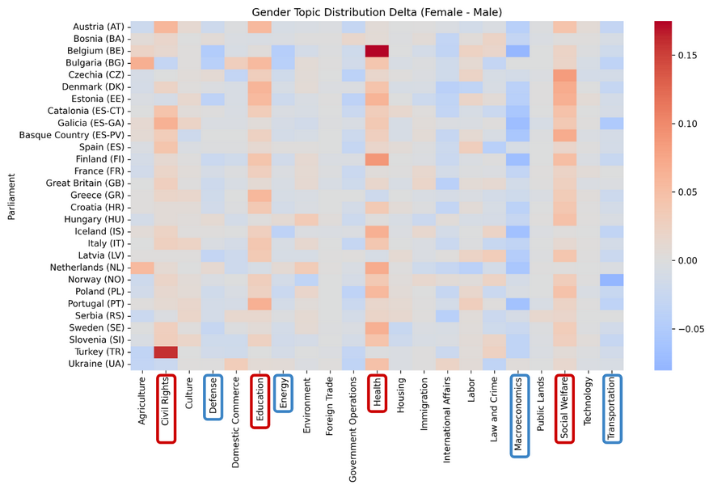 Figure 33. Topic distribution between women (red) and men (blue). (source: Ljubešić et al. (n.a.)).
Research aim & questions
1In this showcase, we replicate the study by Ljubešić et al. (n.a.) with a few adaptations as explained further down. Our aim is twofold:
first, to examine the distribution of topics by gender across European parliaments as a whole (rather than separately by country), focusing only on MPs who act as regular speakers
and second,to explore the typical subtopics within the first two dominant topics for both men and women MPs for which previous studies have found to be more frequently debated by one of the gendered groups
2With the analysis, we will answer the following two research questions:
RQ1.1: How are parliamentary topics distributed between male and female MPs across European parliaments when considering only regular speakers?
RQ1.2: Do the typical subtopics within the first two dominant topics for the gendered groups reflect previously observed distinctions between areas traditionally associated with women’s and men’s interests?
Research data
1In Showcase I, we make use of the machine-translated version of ParlaMint (ParlaMint-XX-en). Although the first stage of the analysis, computing topic distributions for all corpora, could also be performed on the version that aggregates all ParlaMint corpora in their original languages (ParlaMint-XX), we will use the English-translated version of ParlaMint to facilitate the linguistic interpretation of subtopics.
2Moreover, we will filter the data by gender as well as the status and role of speakers. In practice, this means including only MPs who participated as regular speakers, while excluding guests – a heterogeneous group that might comprise both elected figures (such as national presidents, foreign presidents, and MPs from other parliaments) and non‑elected actors (including political appointees and civil activists), as well as chairpersons whose interventions are largely procedural, although this may vary from one parliament to another. This decision is important because MPs are the elected representatives, and their contributions constitute the core of parliamentary debate and policymaking, whereas interventions from external actors or chairs serve different functions and are therefore not directly comparable.
3Restricting the dataset in this way ensures that the observed patterns reflect the substantive participation of legislators rather than being skewed by formulaic or non-substantive speech. This delimitation is especially relevant for the second part of the analysis addressing the subtopic exploration, where we move beyond the pre-assigned topic tags and rely instead on the semantics of the vocabulary itself. In such analyses, the procedural language of chairpersons or the occasional contributions of guests could disproportionately influence keyword extraction or topic modelling, making it harder to categorise vocabulary by topic and obscuring the activity of elected representatives, which is our primary focus in this showcase.
4To recreate the steps of this showcase, after log-in (see Getting ready), first select the ParlaMint-XX-en 5.0 corpus in the box on top of the page (Figure 34).
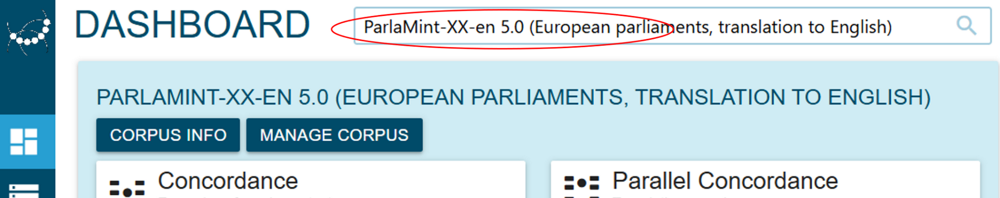 Figure 34. Corpus selection for Showcase I – ParlaMint-XX-en 5.0.
Research techniques
1To achieve our two aims, we make use of several techniques of corpus analysis combining distant and close reading. We show how to:
create subcorpora, i.e., subsets of data that can be used for analysis
create frequency lists, i.e., a list of all values for a tag category in focus, in our case the metadata categories of topics and semantic tags, and interpret their statistics
create keyword lists, i.e., a list of typical vocabulary items for a given (sub)corpus relative to another selected (sub)corpus
Research procedure
1The showcase consists of six steps and combines quantitative and qualitative approaches, guiding the user from general insights to a contextualised interpretation of the data. The execution of each step is explained below.
2To operationalise RQ1.1: How are parliamentary topics distributed between male and female MPs across European parliaments when considering only regular speakers?, we will first create two subcorpora of speeches produced by women and men MPs acting as regular speakers. Next, we shall produce a frequency list of topics discussed in the two subcorpora by relying on the metadata category Topic.
3To operationalise RQ1.2: Do the typical subtopics within the first two dominant topics for the gendered groups reflect previously observed distinctions between areas traditionally associated with women’s and men’s interests?, we will first identify the most dominant topic on each of the frequency lists produced to answer RQ1.1. Next, we will search the two gendered subcorpora only for speeches on the two topics respectively, and save the selection into gendered topic-specific subcorpora. Finally, we will use these subcorpora to compute the keywords lists.
Step I: metadata-based subcorpus creation
1To answer RQ1.1, we want to understand what is the distribution of topics per gender,25 i.e., which are more dominant topics and which are less dominant topics in speeches delivered by women MPs and men MPs respectively. First, we need two subsets of data that will represent the speeches by the two groups.
2As explained under Research data, we want two subcorpora with the following parameters:
gender: woman/man
status: MP
role: regular speaker
3These three parameters are part of metadata categories (also called Text types in noSketch Engine; see Metadata). In noSketch Engine, a subcorpus based on metadata is created as follows:
From the dashboard, click Manage corpus, then find the Subcorpora tile and click the red button Create subcorpora (Figure 35). 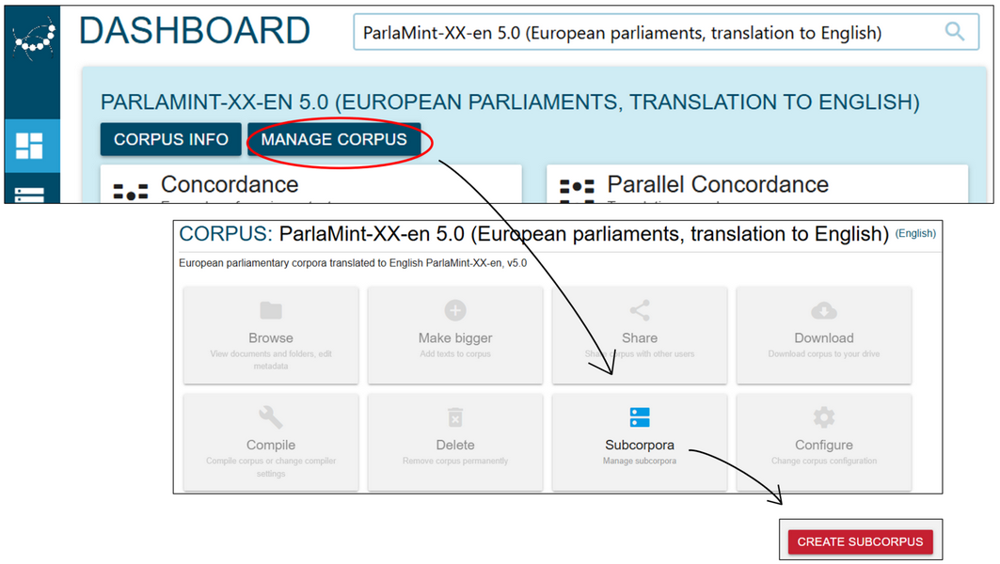 Figure 35. Select Manage corpus, Subcorpora and Create subcorpus as the first step in metadata-based subcorpus creation.
Define Subcorpus name and, by expanding the drop-down lists, select the required values to limit the speeches by metadata (Figure 36). In our case (see Research data for explanation):
subcorpus name = regularMP_F (or whatever feels convenient for you)
speech.speaker_mp = MP
speech-speaker_role = regular
speech.speaker_gender = F
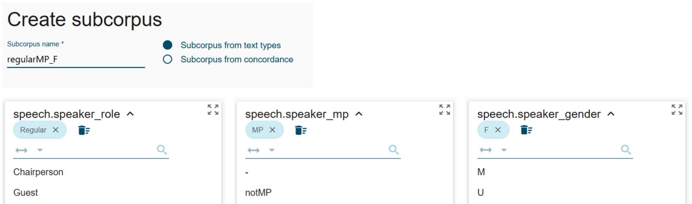 Figure 36. Name the subcorpus and select the appropriate metadata values.
1Click the red button in the corner to save the subcorpus. You are redirected to the Subcorpora overview page which shows the size of the subcorpus as well as the parameters used to create it under the information symbol. We can thus confirm that the corpus of speeches produced by women MPs acting as regular speakers has been successfully produced.
2Moreover, we see that the two subcorpora considerably differ in their sizes: regularMP_M is almost three times the size of regularMP_F which corresponds with the seat distribution between men and women in the parliament. This is important to keep in mind for any subsequent quantitative comparisons of the two subcorpora (see Step III).
Now we repeat the previous steps to create the corpus of speeches produced by male MPs acting as regular speakers. From the Subcorpora overview page, we first click Create subcorpora and then select the following parameters:
subcorpus name = regularMP_M (or whatever feel convenient for you)
speech.speaker_mp = MP
speech-speaker_role = regular
speech.speaker_gender = M
Step II: frequency list creation
1To answer RQ1.1 which foresees examining the distribution of topics by gender across European parliaments as a whole, we will exploit the speech topic metadata category (see Section Topic information for more detail on the annotation procedure). We will compute the frequencies for the 21 topic categories, available in ParlaMint, to understand which topics dominate the speeches produced by women MPs and which by men MPs.
2In noSketch Engine, frequency information can be computed in several ways. Since we are interested in the distribution of topics for one of the metadata categories, we can use a dedicated function in noSketch Engine as follows:
1In the list on the left, we select the desired metadata category, in our case speech.topic, and one of the two subcorpora in focus, here first regularMP_F. We switch the Show parameter to Token coverage, so the frequencies reflect the number of tokens belonging to speeches annotated as addressing one of the topics (Figure 38).
2For our purpose, frequencies reflecting the number of speeches (instead of tokens) would also work, but note that due to a bug,26 when a subcorpus is selected, the tool does not behave as expected when we switch the Show parameter, and always returns the number of tokens. When no subcorpus is selected, the tool returns correct values.
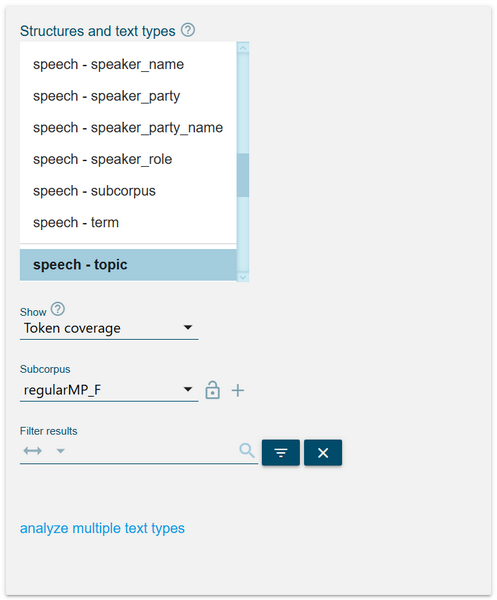 Figure 38. Define the relevant parameters to compute the frequency list.
We download and save the results locally (Figure 39) in order to analyse them more thoroughly later on. We either leave the tab open or save the URL for quick access, since we will use it soon to dig deeper into the data. Figure 39. Click the download button and select the preferred format.
Now we repeat the steps (optionally in a separate window) to create the frequency list for topics addressed in speeches by male MPs. Note that this time, we select the subcorpus regularMP_M.
3For the purpose of this analysis, distribution can be assessed either based on token frequencies or speech frequencies. However, did you wish to obtain frequency data on speeches only, you need to:
Go to the Text type analysis page and select the analyse multiple text types option on the left.
Define as many metadata categories as needed, in this case speech.speaker_role, speech.speaker_mp, speech.speaker_gender and speech.topic. This recreates the conditions used during subcorpus creation and stratifies results per topic.
The results then need to be downloaded and sorted/analysed locally in a spreadsheet.
Step III: frequency list interpretation
1The results (Figure 40) present the topics in descending order of frequency within the speeches of one of the two groups under scrutiny. The frequencies reflect the absolute number of tokens that compose the speeches addressing a given topic. Topics circled in Figure 40 indicate the ones that Ljubešić et al. (n.a.), in line with previous studies, identified as being more frequently debated by one of the gendered groups, namely health, civil rights, education and social welfare for women (red circles), and macroeconomics, transportation, defence and energy for men (blue circles).
2A quick glance at Figure 40 reveals that topics typically associated with women’s speeches (red circles) indeed appear higher in the ranking of the regularMP_F subcorpus than in regularMP_M. Likewise, the highest-ranked topic in the regularMP_M subcorpus (macroeconomics) corresponds to one of the domains most often identified as male-dominated in previous research. This corroborates earlier findings and hints at particular gendered patterns in parliamentary discourse.
3However, topic ordering alone cannot reliably point to gender differences or similarities. Based on our results, one might even argue that the two distributions appear broadly similar: most of the highly ranked topics, e.g., law and crime, international affairs, education, occur frequently in both corpora, albeit in slightly different positions. The challenge lies in the fact that the two subcorpora differ substantially in size (see Step I). Without normalisation, any comparison risks overestimating the prominence of certain topics in the larger corpus while underestimating it in the smaller one.
4Normalisation is achieved by calculating relative frequencies, which makes it possible to assess not only whether women and men debate the same themes (which is expected since this depends on the session agenda), but also whether they devote proportionally more or less attention to specific areas. For instance, observation based on absolute frequency values, according to which topics are ranked in Figure 40, suggests that health and social welfare occupy a relatively stronger position in women’s speeches than in men’s, while macroeconomics and defence are more salient in men’s discourse. The next step in the interpretation of the results is therefore to adjust for corpus size and examine whether proportional frequencies confirm the patterns observed based on the absolute counts.
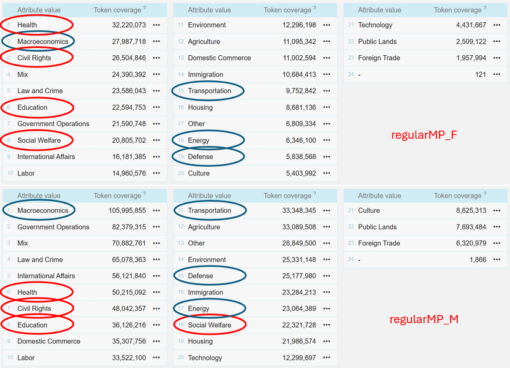 Figure 40. Topic distribution in speeches by women and men MPs. Topics previously identified as gender-dominant are circled (red = women, blue = men).
5Relative frequency is calculated by dividing the number of tokens for a given topic by the total number of tokens in the subcorpus and then multiplying the result by 100 or, as in our case, 1 000 000, depending on the desired scale. This normalises the data across subcorpora of different sizes and enables direct comparison between them.
To perform this step, we open the data, which we downloaded during Step II, in a spreadsheet editor.
The total number of tokens can be retrieved either from the results page (see Total frequency in the upper-right box) or from the information page under the Subcorpus sizes section (accessible via the information icon at the top of the page next to the corpus selection box).
To obtain the relative frequency, we divide the absolute counts for, e.g., regularMP_F with the total number of tokens from that corpus (327,631,659) and multiply by 1,000,000. We do the same for the regularMP_M corpus, just that this time the total token count is 855,066,379.
6Table 3 shows the predominant topics of women’s speeches, and Table 4 illustrates the predominant topics of men’s speeches, based on the ratio of relative token frequencies27. We observe that the patterns established based on absolute counts do not fully translate when relative frequencies are taken into account. Consider, for example, the first two topics in the listing above (Figure 40) that are shared between the two subcorpora: Health and Macroeconomics. In absolute terms, Health is more frequently represented in the regularMP_M subcorpus than in regularMP_F (50 million tokens vs. 32 million tokens, respectively). This might lead to a quick but misleading conclusion that health is a more dominant topic for men than for women. However, relative frequencies reveal the opposite: women address health almost twice as often as men. By contrast, Macroeconomics is clearly very prominent in the regularMP_M subcorpus and much less so in regularMP_F. Relative frequencies confirm this trend, showing that macroeconomic issues are discussed nearly 1.5 times more often in men’s speeches. Yet the absolute counts also show that, despite this difference, Macroeconomics remains a major theme in the regularMP_F subcorpus, ranking second overall.
Table 3. Predominant topics in women’s speeches, based on the ratio of relative token frequencies.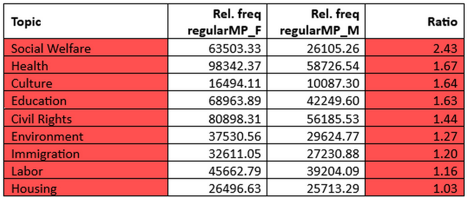 Table 4. Predominant topics in men’s speeches, based on the ratio of relative token frequencies.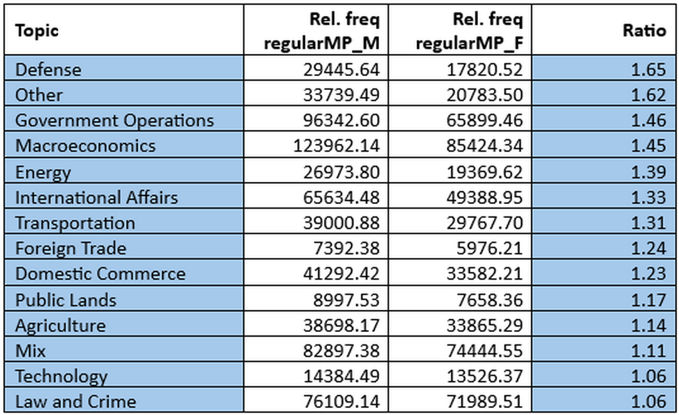
7This comparison illustrates the value of considering both absolute and relative measures. Absolute frequencies highlight the overall weight of a topic within a subcorpus, while relative frequencies uncover how strongly each gendered group emphasises a given issue compared to the other group. Taken together, they provide a more nuanced view: women clearly privilege topics such as health and social welfare, while men devote proportionally greater attention to macroeconomics, defence, and government operations. At the same time, overlap in high-ranking topics across both groups reminds us that gendered differences occur within a largely shared parliamentary agenda.
8Yet even when a topic appears highly ranked in both subcorpora, this does not necessarily mean it is addressed in the same way. Subtle differences in framing, sentiment, or argumentative stance may reveal distinct gendered approaches to these issues. Our second research question, which we tackle in the next steps, addresses exactly this aspect.
Step IV: concordance-based subcorpus creation
1To answer RQ1.2 which foresees exploring the typical subtopics within the two topics we identified in the previous step for each gendered group, we will now look into the typical vocabulary used in the speeches on the topics of Health and Macroeconomics. Typical vocabulary of one group against the other can be obtained through an analytical technique, called keywords. To be able to compare two groups, we first need to create the appropriate subcorpora. We could compute the keywords for the two subcorpora already created, i.e., regularMP_M and regularMP_F, but we are not interested in the differences in their overall vocabulary, but just in the differences in the vocabulary on two specific topics. For this reason, we need to create subcorpora of speeches that only cover the topics in focus for either of the two gendered groups.
To open all concordance lines, in our case speeches, marked as belonging to one of the two topics, we can continue from the Text type analysis page (see Step II). We shall start with the topic-distribution results for the regularMP_F subcorpus.
In the lower part of the page, we see the list of topics which are followed by frequency information and three dots which leads us to concordance lines (Figure 41). 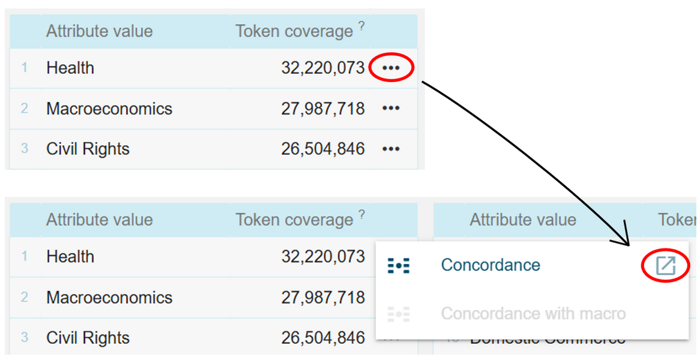 Figure 41. Display the concordance lines of regularMP_F for the topic of Health.
We are redirected to the Concordance view which allows interacting with the data, i.e., the actual transcripts of speeches. In the upper right corner, we see a + symbol which is used to create a subcorpus from all the listed concordance lines (Figure 42). However, due to a limitation of the tool which does not allow creating a subcorpus based on concordance lines that were computed based on another user-defined subcorpus (in our case regularMP_F), we need to re-display the desired concordances through the search functionality or the so-called Concordance function. Figure 42. The deactivated + symbol otherwise used to create a subcorpus from concordance lines.
1noSketch Engine enables different types of searches, from simple to advanced. The interface allows to formulate search queries that combine tokens, different levels of linguistic tags and metadata. The search option that allows most complex queries is called CQL which uses a particular syntax and requires a bit of getting-used-to.28 However, there are some shortcuts in noSketch Engine that help the user formulate the CQL query, like the CQL builder available in the interface, or reusing previous queries displayed in the tool which is what we will do in our case.
2In the list of concordances, look at the upper left corner where you’ll find the CQL query used to display the concordance lines on the topic of Health (Figure 43). Copy this to your clipboard, i.e., <speech topic=="Health">[].
Figure 43. CQL query information on the Concordance page.
As shown in Figure 44, open the Concordance function via the menu on the left, choose the Advanced tab and the CQL option in the list. Paste the copied query on the line and define the three parameters we used in Step I to create the subcorpus (in our case, we first select the combination MP, regular, F) and click the red button Go.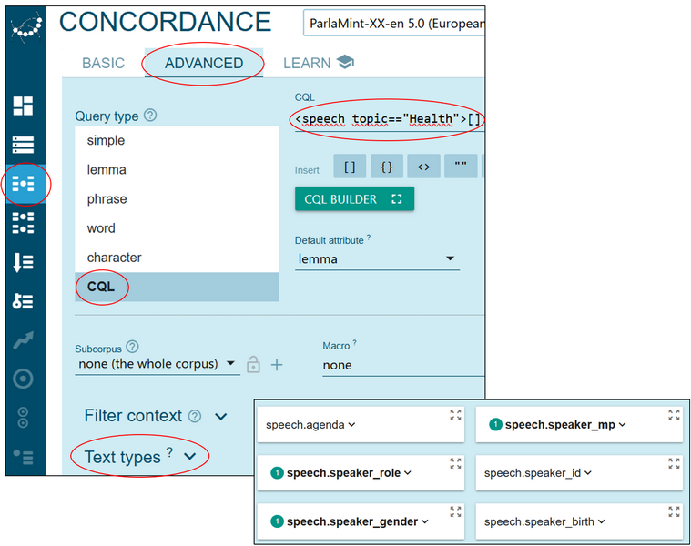 Figure 44. Enter the CQL query and metadata values under the Advanced tab.
Now you’re back at the page with concordance lines and this time the + symbol in the upper right corner is enabled. Click the symbol, define the subcorpus name, in our case health_F, choose speech as a structure so that the entire speeches are saved in the subcorpus, and hit Create subcorpus (Figure 45). You can check that the operation was successful on the Corpus Information page, accessible via the information symbol next to the corpus selection box at the top of the page. 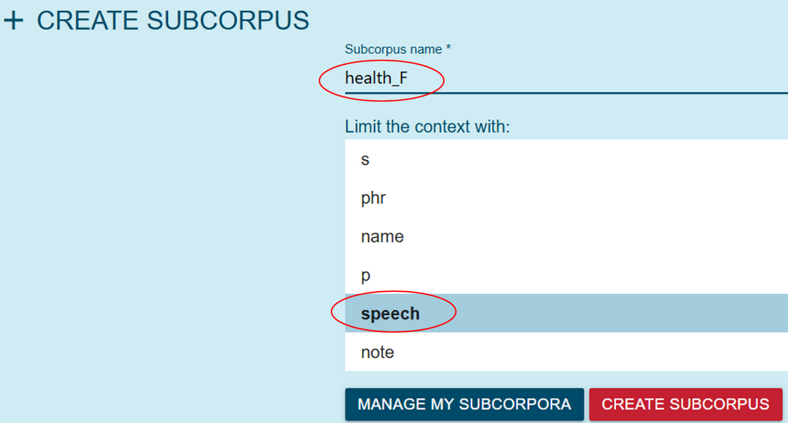 Figure 45. Create the subcorpus of health-related speeches produced by women MPs.
Repeat the steps and change the metadata parameters accordingly to create a subcorpus of health-related speeches produced by male MPs. Next, repeat the steps to create the two subcorpora of speeches on Macroeconomics (<speech topic=="Macroeconomics">[]). Your list of subcorpora should include the entries as shown in Figure 46.
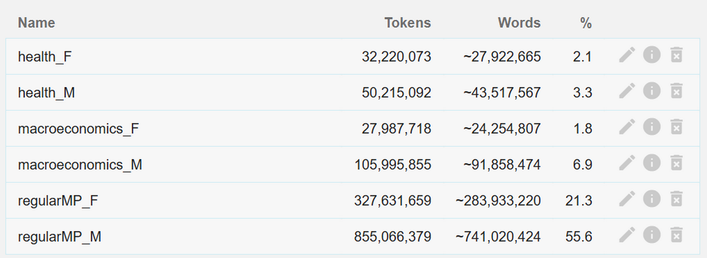 Figure 46. The list of subcorpora created by users.
Step V: keywords list creation
1Now that we have created the necessary subcorpora, we can proceed to creating keywords lists which will show us the typical vocabulary of the focus group in comparison to the reference group. The calculation is based on simple math and basically leverages relative frequencies to determine which items are comparatively more frequent in the focus corpus. The result is the keyness score which can be displayed via Change view settings and is, by default, used to sort the keywords. The keywords can be actual tokens, but can also be different tags. In this step, we will exploit both options. First, we will use semantic annotations, available in the machine-translated ParlaMint, to compute the typical semantic domains used by men and women MPs in speeches on macroeconomics. Next, we will take another approach and produce a list of typical lemmas used by men and women MPs in speeches on health.
Keywords lists for subcorpora on macroeconomics
From the dashboard, select the Keywords function (Figure 47). 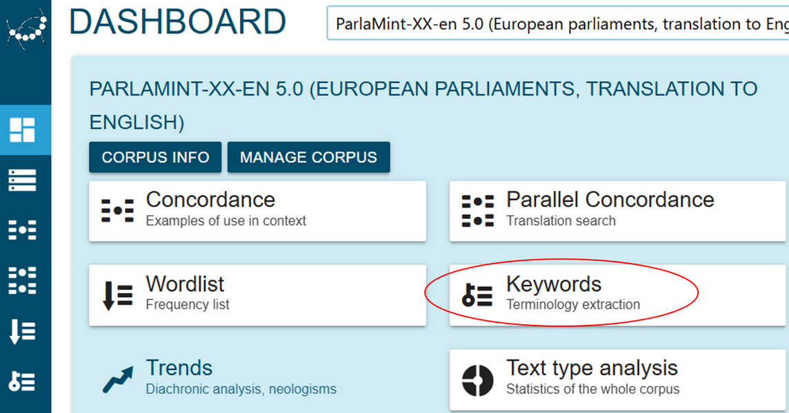 Figure 47. Select the Keywords function.
Select the focus subcorpus (in this case, macroeconomics_F) and the reference subcorpus (in this case, ParlaMint-XX-en & macroeconomics_M), as in Figure 48. Choose USAS glosses under Keywords settings and uncheck the option Only alphanumeric (otherwise results will not show since this is incompatible with the gloss format), then press Go to view the key domains for the subcorpus macroeconomics_F. 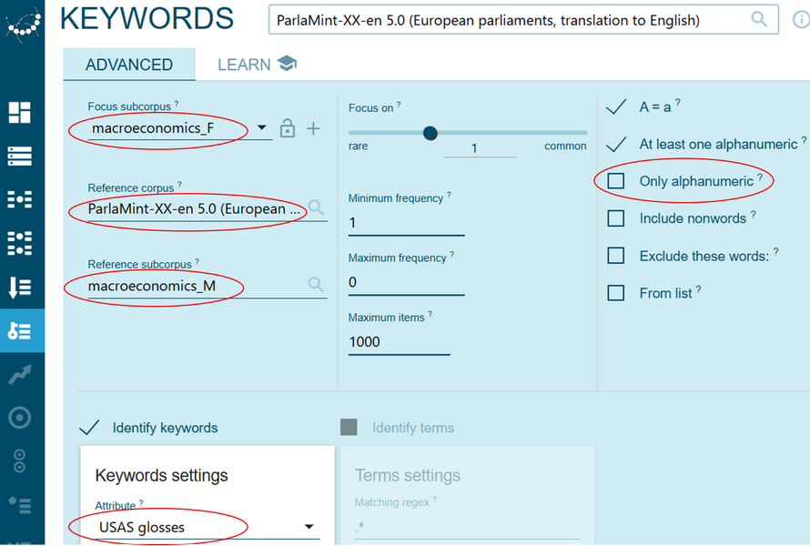 Figure 48. Set the parameters for keyword list computation.
For an easier comparison between the two lists, i.e., from macroeconomics_F and macroeconomics_M, download the results by clicking the download symbol in the upper right corner and select the desired format (Figure 49). Figure 49. Press this button to download the data.
To change the focus and reference subcorpus, and therefore, to obtain the key semantic domains for the macroeconomics_M subcorpus, simply click the blue button with arrows (Figure 50). Once you get the results, download this list as well. Figure 50. Press this button to change the focus and reference subcorpus.
Keywords lists for subcorpora on health
For the analysis of typical vocabulary on health, we want a list of lemmas instead of semantic domains. To change the parameters, click the Change criteria button (Figure 51). Figure 51. Press this button to change the parameters for keywords.
Now, swap the subcorpora. In this case, we use health_F as the focus corpus and health_M as the reference corpus. Select lemma and uncheck the A = a option to conserve the capitalisation and more easily identify proper names (Figure 52). Press Go to view the key lemmas for the subcorpus health_F. Then press the Switch button (Action 4) to produce the key lemmas for the subcorpus health_M. 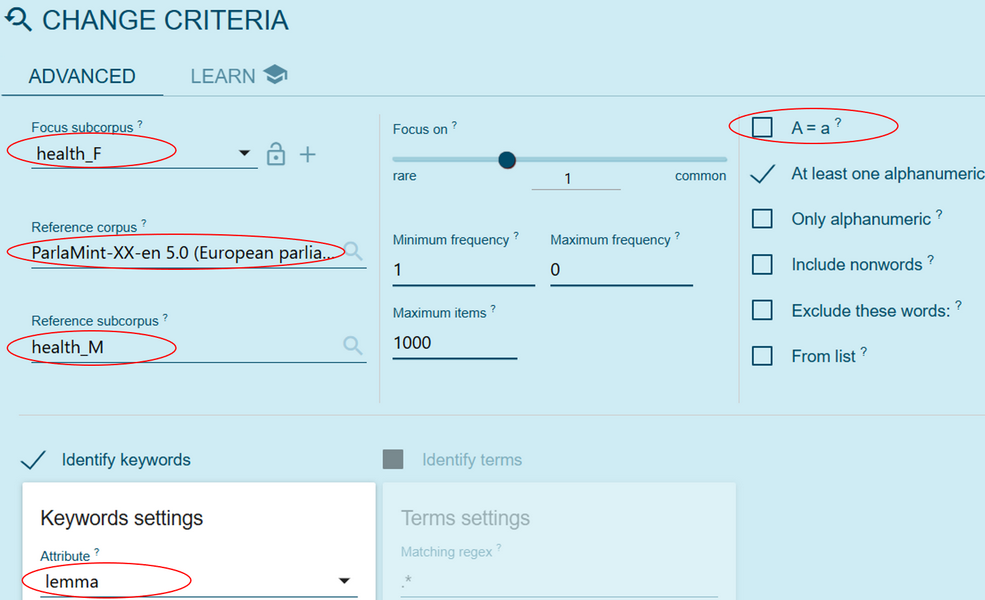 Figure 52. Set the parameters for keyword list computation.
1At first glance, the keyword lists (for health_F and for health_M) appear rather confusing, which requires some preliminary clarification before moving on to interpretation. The lists can be more or less “messy.” This is especially true for the machine-translated version, which contains typical translation errors (see Footnote5). The keyword method itself also adds to this messiness, as it tends to highlight anomalies or features that are particularly distinctive compared to the reference subcorpus. Another layer of complexity in interpreting these lists is the importance of context: while a researcher is usually familiar with the political and social background of the country they are analysing, it is much harder to remain fully aware of all the local political issues, debates, and actors that may surface in the keywords of several parliaments, as is our case. By contrast, keyword lists derived from original-language data are usually much clearer. For instance, see the two keyword lists from the British corpus in Figure 53 below.
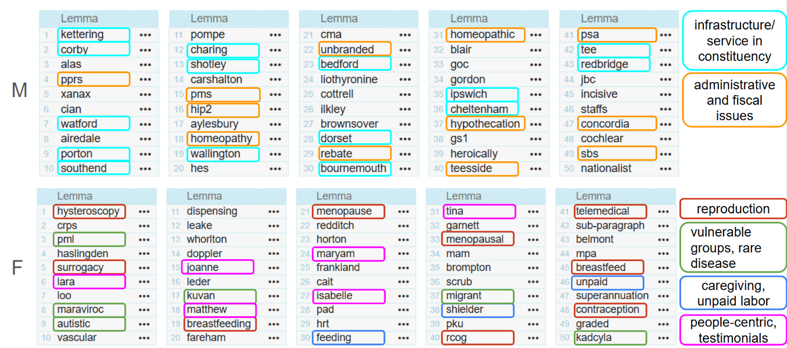 Figure 53. An example of the analysis of keywords from speeches on health delivered by men and women MPs from the ParlaMint-GB corpus.
2Although the lists we obtain are less straightforward to interpret than those derived directly from the ParlaMint corpora in the original languages (due to translation errors and limited contextual information) they can still be analytically useful if approached with appropriate mitigation strategies. Such strategies may include disregarding obvious translation mistakes or restricting the analysis to common nouns only.
3To minimise the analytical challenges posed by insufficient knowledge of the local context across 29 parliaments, and to facilitate content analysis aimed at subtopic identification, we adopt the latter strategy and exclude proper nouns from our analysis. One way to achieve this is to disregard all lemmas that begin with or are written entirely in capital letters. While this could be done manually, we make use of a shortcut available in noSketch Engine:
To generate a list of keywords that reflects only common nouns – operationalised here as words written in lowercase, we repeat Action 5 (Change criteria) and introduce one additional parameter under Keywords settings. Specifically, we add a filter under Matching regex in the following format: [a-z].* (Figure 54). 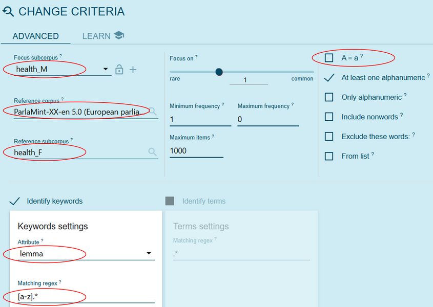 Figure 54. Add regular expression (regex) to exclude proper nouns.
Step VI: keywords list analysis and interpretation
1The analysis may take several directions, but in this showcase, in line with our second research question, we focus on the comparison of subtopics addressed in speeches on a common central topic, i.e. Macroeconomics and Health. To this end, we first analyse the common and unique semantic domains present on lists of speeches by women and men respectively and then perform close reading of a random sample of 20 concordances for each of the first 50 key semantic domains to establish the prevailing topic patterns.
2The two thresholds (20 and 50) are heuristic rather than fixed parameters. They are set to keep the qualitative inspection manageable while still covering the main semantic patterns that characterise the corpus. These thresholds can be adjusted depending on the research goals, corpus size, and how much manual work is feasible. You can also base your selection on keyness scores instead of just taking the top N keywords, but there’s no universal rule for what counts as a “good” score – it depends on your corpus and research questions.
We first look at the list of semantic domains and identify those that are unique for one of the two lists and mark these down.
Then, for each of the top 50 semantic domains, we open the concordance lines of the focus corpus via the three dots next to the selected key semantic domain (Figure 55). 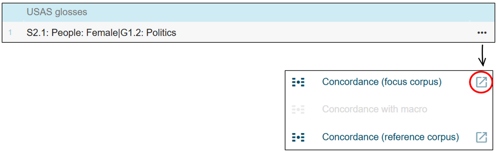 Figure 55. Open the concordances for the first key semantic domain of the macroeconomics_F subcorpus.
1To produce a random sample of 20 concordance lines, we select the Get a random sample button and input the number 20 (Figure 56).
2Note that you might find it easier to read the lines, if you select the option sentence instead of KWIC, which you can find a few of symbols to the right of the Get a random sample button.
Figure 56. Press this button to get a random sample.
2Remember that you also have the possibility to read the entire debate in the original language (see below for the instructions) and in a more user-friendly format in TEITOK (see From noSketch Engine to TEITOK29).
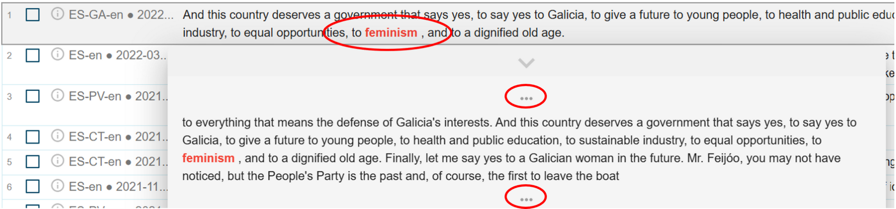 Figure 57. Click the word in red and the three dots to show and expand the context.
1Based on the context, we annotate, in the spreadsheet editor, a given key semantic domain with one of the three tags depending on the thematic emphasis that is foregrounded in the concordances:
technical
social
other
2The tags are showcase-specific and were formulated based on the observations from related work (see the introduction to this showcase) that women tend to focus on the social topics and relational aspects more than men who tend to focus more on technical domains and are more process-oriented in their speeches.
We repeat the procedure for both subcorpora, macroeconomics_F and macroeconomics_M. An excerpt from this analysis is presented in Table 5 and Table 6.
Interpreting the keywords on macroeconomics
1The analysis of key semantic domains in speeches on Macroeconomics shows that both women and men MPs address this topic, largely as a result of the parliamentary agenda, but their emphases differ. By identifying domains that are exclusive to one group, for example, Health and disease or Residence for women, and Competition or Industry for men, we see a clear divergence. Women’s speeches foreground the social dimension of economic management, drawing attention to welfare-state concerns and everyday-life issues ranging from child benefits to pensions. Men’s speeches, by contrast, more often employ domains associated with market governance, monetary policy, and business structures.
2Because semantic tags alone do not always yield fully transparent interpretations, it is important to contextualise results to avoid bias. To this end, we examined a random sample of concordances and assigned each key semantic domain a predominant thematic orientation: technical, social, or other. This additional layer of analysis, illustrated in Table 5 and Table 6, reinforces the initial observations: men’s discourse tends to be more technical in character than women’s, e.g., You know that metallurgy has started to rise a little bit, but there's no demand for metal in the internal market …). This is not to say, however, that the social aspect is not fully absent as shown by this illustrative example: Inflation is a hidden tax, which is the tax of the little man. On the other hand, women’s discourse more frequently foregrounds relational and social aspects, e.g., it has to do with both youth work and a lot of other preventive work; the rate of female participation in work is really very low; a welfare state that protects us and that allows citizens to continue to progress).
Y1: Science and technology in general|O1.1: Substances and materials: Solid
Technical
G1.1: Government|S2.1: People: Female
Other
F4: Farming & Horticulture|O1: Substances and materials generally
Technical
I3.1: Work and employment: Generally|S2.2: People: Male
Social
I1.1: Money and pay|G1.2: Politics
Technical
X9.1+: Able/intelligent|S2: People
Other
S9: Religion and the supernatural|Q4.1: The Media: Books
Other
A2.1+: Change|M7: Places
Technical
L1-: Dead|S5+: Belonging to a group
Social
3Semantic tags can also be useful for identifying rhetorical characteristics in parliamentary discourse. Certain semantic domains do not point to thematic content but to stylistic features of speech, for example, special forms of address (e.g., congresswoman), evaluative labels (e.g., genius), or appeals to authority (e.g., Bible references). Such domains appear in both corpora, but they occur more frequently, and thus seem more typical, in the men’s subcorpus. Already within the first ten key domains, three can be identified as primarily expressive rather than thematic.
4Likewise, some semantic domains capture vocabulary that is used metaphorically rather than to reference concrete entities. These instances show why close reading is essential: without context, semantic tags may be misread as pointing to concrete themes, when in fact they signal figurative usage. For example:
B5: Clothes and personal belongings | I1: Money generally → Let us honestly say that the aim of the tax package is to reach into everyone's wallets, especially those who have little left. (macroeconomics_F)
X3.5: Sensory: Smell → Several interferences, adjustments, delays – it reeks of corruption, Minister! (macroeconomics_M)
Analysing the keywords on health
1The second approach to the analysis focuses on comparing subtopics in speeches delivered by men and women on the topic of Health by analysing a list of key lemmas (rather than semantic tags as used for the speeches on Macroeconomics).
To analyse the keywords list for the health_Msubcorpus and health_F subcorpus, we repeat Actions 1–4 described above.
2In some cases, the keywords and its context might not make much sense, and we can assume that the keyword actually points to a translation error. To check whether this is true, we can look at the keyword/sentence in the original language, as follows:
From the keywords list, e.g., for health_M, we first open the concordances for the chosen keyword via the three dots next to it, e.g., first keywords: sh (Figure 58). Figure 58. Open the concordance lines for the first keyword on the list.
Look at the first concordance line and open the metadata section by clicking the grey area on the left of the sentence. Copy the Sentence ID to clipboard (Figure 59). Figure 59. Get the Sentence ID by expanding the metadata section on the left side of the sentence itself.
1Next, open noSketch Engine in a new tab and select the ParlaMint-XX corpus which aggregates the original data from all PalaMint corpora. We choose the Concordance function, open the Advanced tab and select the CQL option. Then, we input the CQL query in the format of Sentence ID value.
2In our case, we use the copied value and obtain the following query: <s id ="ParlaMint-ES-GA_2021-11-23-DSPG058.seg445.s1"/> (Figure 60). To initiate the search, hit Go.
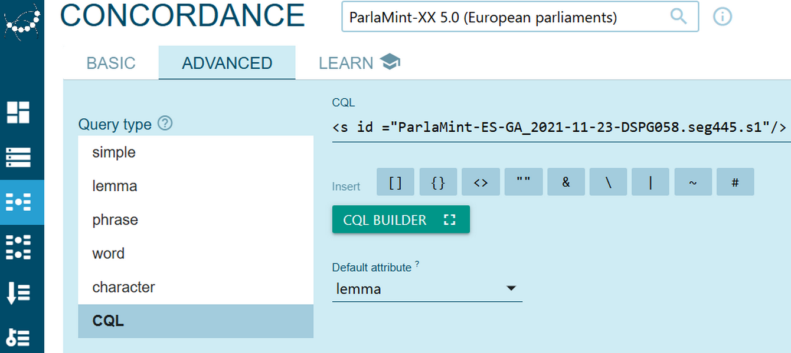 Figure 60. Setting the parameters to display a given sentence in the original language.
We are presented with the sentence in the original language. By comparing the translated sentence with the original one, we can establish that sh is a translation error for the e tal in the phrase "¡Malditos fulanos e tal...!", and we can skip this keyword in our analysis.
As we progress through the list, we annotate each relevant keyword, i.e. those that are not translation errors like sh, according to the showcase-specific interpretative schema30 of health subtopics:
administrative and fiscal issues
caregiving/unpaid labour
infrastructure in constituencies
mental health
reproduction
special disease/disability treatment
error
3This schema was developed inductively, through an iterative process of moving back and forth between the concordance lines. Close reading enabled the identification of recurrent thematic clusters that capture distinct and context-specific ways in which Members of Parliament discuss health-related issues. Such an approach typically involves an open-ended coding schema, where categories are added, refined, or merged as new patterns emerge. The concordance lines are therefore examined multiple times, allowing the researcher to adjust the tags in light of an expanded and more nuanced interpretative framework. The categories thus reflect data-driven thematic orientations within the corpus rather than a priori classifications from existing typologies.
Interpreting the keywords on health
1The analysis, of which an excerpt from the results is presented in Table 7 and Table 8, shows that women tend to focus on different subtopics than men when debating Health. While the method of keywords is biased towards finding differences given that it outputs a list of typical words of one subcorpus in relation to the other subcorpus, what is crucial are the actual thematic areas that each of the gendered groups covered in the debates. The fact that women and not men MPs address the topics traditionally associated with women, as shown in the example below, demonstrates that they indeed contribute an important part in the representation of the so-called women’s issues.
2Women MPs most often highlight patient-centered perspectives, focusing on gynecological and reproductive health, e.g., contraception, menopause, mammography, chronic and psychosocial conditions, e.g.,coeliac, anorexia, and the accessibility of care. Men MPs, by contrast, address health more indirectly through ideological and structural dimensions, e.g., anti-vaccination, homeopathy, or budgetary and institutional aspects of health policy, e.g., forint, EEAS. They are also much more likely to frame health with ideological or symbolic language, invoking terms such as martyrs and capitalist, that situate health debates within broader political struggles. This contrast shows that, while both women and men MPs address health in line with the parliamentary agenda, their emphases diverge: women draw attention to issues that might otherwise remain invisible, such as the specific needs of female patients highlighted in the example below.
“I choose to stop at women's health, which no one has mentioned so far. Because there is a need for more knowledge about diseases affecting women more often than men. Some of these diseases have been exacerbated during the pandemic, such as eating disorders, especially in young girls. But we also have women who are more often affected by rheumatic disorders and multiple sclerosis. There are women who get heart attacks, but have symptoms other than men, and we need to know more about that.” (ParlaMint-NO, Kristin Ørmen Johnsen, 2021)
Table 7. The top 10 key lemmas in the health_F subcorpus with tags (translation errors excluded).
KEY LEMMAS in health_F
TAG
hysteroscopy
reproduction
para
administrative and fiscal issues
coeliac
special disease/disability treatment
endometriosis
reproduction
psychopharmaceutical
mental health
inami
administrative and fiscal issues
logopedist
special disease/disability treatment
menopause
reproduction
ggz
mental health
contraception
reproduction
Table 8. The top 10 key lemmas in the health_M subcorpus with tags (translation errors excluded).
KEY LEMMAS in health_M
TAG
commander
administrative and fiscal issues
lira
administrative and fiscal issues
martyr
political/ideological framing
lawmaker
procedural
capitalist
political/ideological framing
emcdda
administrative and fiscal issues
eeas
administrative and fiscal issues
veneration
procedural
cedefop
administrative and fiscal issues
forint
administrative and fiscal issues
3To conclude, this showcase has demonstrated how frequency counts and keyword analysis can be applied to explore differences and similarities in topic coverage between women and men MPs in parliamentary debates. By further examining speeches on Macroeconomics and Health, we have observed both the potential and the pitfalls of the methods and data used. Quantitative insights, machine translation, and high-level annotations such as semantic tags can help scale up the analysis and reveal patterns that would otherwise remain hidden, yet they also carry the risk of misleading analysts into drawing overly hasty conclusions. This is why contextualisation remains essential, and we have seen several ways to optimise it – through sorting, filtering keyword lists, returning to original data, and using random sampling.
4Moreover, each method requires a solid understanding of its underlying principles in order to avoid misinterpretation – for example, applying relative frequencies when comparing subcorpora of different sizes, or focusing on the types of differences rather than simply their existence when interpreting keyword results. In this way, we can use these methods both safely and efficiently to interpret discourse patterns and to understand how different groups of MPs (not only gendered ones) contribute to shaping parliamentary debate or indeed any other form of communication represented in a corpus.
Showcase II: sentiment analysis in parliamentary discourse
1Sentiment analysis focuses on identifying the attitudes or opinions people express toward a specific entity. Introduced as a natural language processing task nearly twenty years ago, it has since evolved considerably. However, despite the latest advancements in computational linguistics, the empirical applications of sentiment analysis in political science are not very widespread. First, they are commonly limited to the English-speaking world, while analysing political discourse in low-resourced languages can pose problems due to the lack of ready-made tools. Second, predominant approaches to sentiment analysis in political science such as dictionary-based sentiment extraction, i.e. using a predefined lexicon marked with positive, negative or neutral connotation and counting or weighing the occurrences of these words in a unit of analysis, produce less accurate results, while the usage of large language models is time- and cost-inefficient.
2The approach to sentiment analysis adopted in ParlaMint 5.0 addresses both challenges by pre-training the multilingual transformer model on the domain-specific training parliamentary datasets from a selected group of languages and then running it on other languages in the ParlaMint corpora without additional fine-tuning. The resulting 3-level, 6-level and raw numerical sentiment annotation available via the noSketch Engine concordancer opens multiple possibilities for exploring and comparing sentiment patterns in parliamentary speech as well as observing them in combination with other types of annotation in the ParlaMint corpora. For details on how sentiment is annotated in the ParlaMint corpora, please see Sentiment information above.
3Ljubešić et. al. (2025) measured the emotional colouring of sentences in 26 national and 3 regional parliaments in Europe across the 21 policy topics specified in ParlaMint. They concluded that most European parliaments employ predominantly negative rhetoric across policy areas, which is reflected in the prevalence of blue in Figure 61. Topic-level patterns are also visible. Cultural debates are the most positive, likely because they are often celebratory and unifying, whereas discussions of Law and Crime are consistently negative, reflecting their focus on problems such as criminal behaviour and punishment. Country-wise, the United Kingdom, Latvia and Serbia stand out with a more positive tone across topics, while debates in the Portuguese, Estonian or Greek parliaments appear to be more negative compared to other European countries.
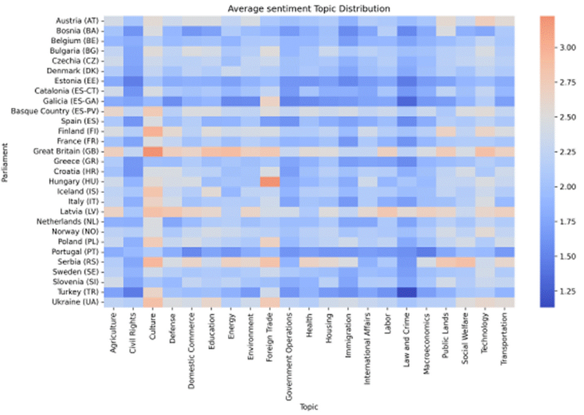 Figure 61. Average sentiment across CAP topics and parliaments, with sentiment scores from 1.2 to 3.2, where darker blue indicates more negativity and lighter colours show more positive tone (Source: Ljubešić et. al., n. a.)
Research aim & questions
1In this showcase, we problematise the application of sentiment data, which were annotated at the sentence-level, in relation to selected concepts, which are expressed at the word- or phrase-level. Our overarching aim is two-fold:
first, to explore possibilities and limitations of analysing sentiment in relation to linguistic units smaller than a sentence
and second, to uncover variation in sentiment froma longitudinal perspective and across parliamentary parties.
2The following mock research questions are designed to help you achieve the aims of this showcase.
3RQ2.1: Has the sentiment in UK parliamentary debates when the European Union is referenced changed since Brexit?
4RQ2.2: Do polarity-bearing attitudes expressed by MPs in the UK Parliament, when mentioning the European Union, split along party lines and, if so, did Brexit influence this division?
Research data
1Our primary focus in this showcase will be on ParlaMint-GB, i.e. the British parliamentary corpus. In fact, the steps taken here could also be applied to any other ParlaMint corpus in its original language or, potentially, to the machine-translated version of ParlaMint (ParlaMint-XX-en). However, care should be taken when interpreting results based on machine‑translated texts, as translation errors or subtle shifts in meaning may affect the analysis. It is equally important to recognise the risk of misinterpreting sentiment related to specific concepts across parliamentary parties and groups, if one does not account for varying linguistic patterns and rhetorical traditions on the one hand, and party agendas and national contexts on the other. You can mitigate these risks by combining linguistic analysis with contextual political knowledge of the countries or regions under study.
2To recreate the steps of this showcase, after logging in (see Getting ready), first select the ParlaMint-GB 5.0 corpus in the dropdown menu at the top of the page (Figure 62).
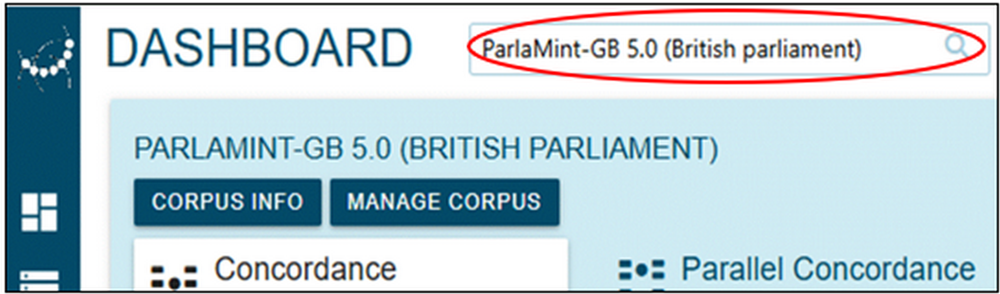 Figure 62. Corpus selection for Showcase II – ParlaMint-GB 5.0.
Research techniques
1In this showcase, you will familiarise yourselves with the following corpus techniques:
composing simple and CQL queries
extracting and comparing relative frequency and relative density
calculating the ratio of relative token frequencies
reading concordance lines and examining language patterns
exploring sentiment-related concordances through collocation
generating and comparing keyword lists to capture nuances in sentiment
Research procedure
1This showcase follows five basic steps, integrating quantitative and qualitative methods to lead you from broad observations to a contextualised interpretation of the data. However, it is worth noting that corpus-assisted research in SSH is often non-linear, as the retrieved data may prompt adjustments to the operationalisation of units of inquiry, units of analysis, or even the research question itself.
2To seek answers to RQ2.1 and RQ2.2, we need to operationalise them for the purposes of automatic retrieval of the concordance lines referring to the European Union before and after Brexit. There are three considerations to keep in mind.
3First, the European Union can be explicitly referred to either as the phrase European Union or as the abbreviation EU. We should also bear in mind that it is not uncommon for politicians, MPs included, to converge the concepts of the EU and Europe in their speech, drawing on the polysemous nature of the word Europe. For further discussion of how these concepts converge and diverge in political discourse, see, e.g., Krzyżanowski (2010: 99-131).
4Second, because the UK officially withdrew from the EU on 31 January 2020 – just one day after the World Health Organization (WHO) declared COVID-19 a public health emergency of international concern – we can use the integrated subcorpora to make the desired longitudinal comparison, since ParlaMint-GB contains no speeches dated 31 January 2020.
5Third, as in the research procedure for Showcase I, we will again restrict our search to utterances by MPs only, excluding guests and chairpersons.
7Before we proceed any further, it needs to be emphasised that sentences containing any of the search nodes (EU, European Union, Europe) and annotated as “Negative”, “Neutral” or “Positive”, do not necessarily express the negative, neutral or positive attitude of the speaker toward the EU/European Union/Europe! In ParlaMint corpora, sentiment is annotated at the sentence level, while our focus in this showcase is on patterns of use at the word/phrase level. Therefore, the quantitative results we are about to obtain must be interpreted with caution, and it is strongly advised to closely read selected concordance lines from the searches and apply qualitative analysis for their explanation, which will be an integral part of your research methodology.
Step I: composing simple and CQL search queries
1In this section, we focus on a set of practical operationalisations of RQ2.1 that can be implemented using simple and CQL‑based searches in the NoSketch Engine interface. These examples illustrate one possible way of approaching the research question; however, they do not exhaust all potential operationalisations. Other analytical pathways are possible, but for the purposes of this showcase we will concentrate on the following two options.
Does the distribution of the lemma EU and the sequence European Union in sentences spoken by MPs and annotated as “Negative”, “Neutral” and “Positive” in ParlaMint-GB v. 5.0 differ between the Reference subcorpus and the COVID and COVID, War subcorpora?
Does the distribution of the lemma Europe in sentences spoken by MPs and annotated as “Negative”, “Neutral” and “Positive” follow the same patterns as those observed for EU and European Union?
After selecting the corpus of interest, as shown in Figure 62 above, for a simple query, click the Concordance icon on the vertical menu bar and select Advanced search option. Simple query is the default query type in the drop-down menu (Figure 63). 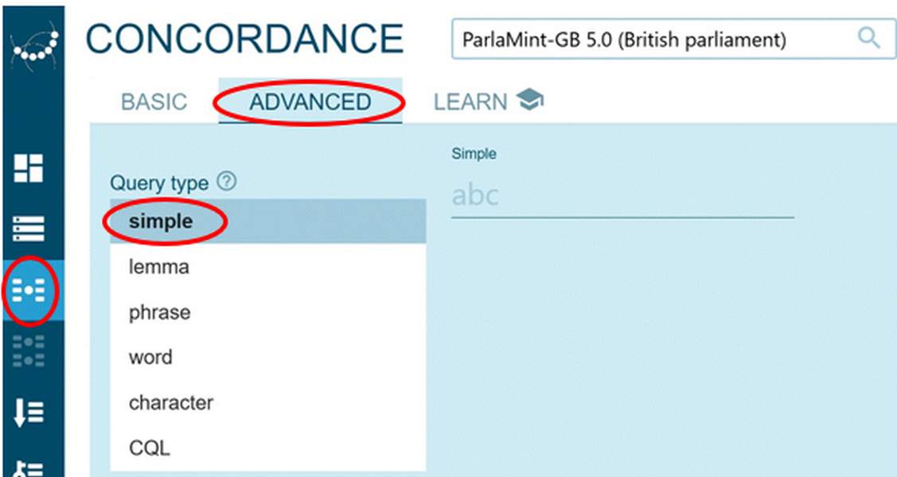 Figure 63. Starting a simple concordance query.
Write EU | European Union in the search line and limit your search by selecting the built-in Reference subcorpus and MP speakers under Text types. Click Go and view your results. To view details about the selected text types or to modify the selection, click the three dots next to the number of text types in the top left corner. To change your search criteria, click the far-left icon in the top horizontal toolbar. (Figure 64). Figure 64. Proceeding with a simple concordance query and limiting your search.
Alternatively, you can opt for a CQL search by clicking the Concordance icon on the vertical menu bar, selecting Advanced search option and the CQL query type in the drop-down menu (Figure 65). Figure 65. Starting a CQL concordance query.
To proceed with a CQL query, write [lemma_lc="EU"] | ([lemma_lc="European"] [lemma_lc="Union"]) within <speech subcorpus="Reference" & speaker_mp="MP"/> – all in the CQL line (Figure 66).
1➽ noSketch Engine tip: searching for lemma and lower-case lemma (lemma_lc) may return somewhat different results, since these are distinct attributes. While the lemma attribute preserves capitalisation distinctions introduced by the lemmatiser, particularly for acronyms and named entities, the lowercase lemma flattens these differences, including tokens with inconsistent or non-standard capitalisation and tokens whose lemma was normalised differently upstream. The same distinction applies to word and lower-case word attributes. Use lower case attributes, when you are interested in case-insensitive matching and unified frequency counts (see Lowercase version for more detail).
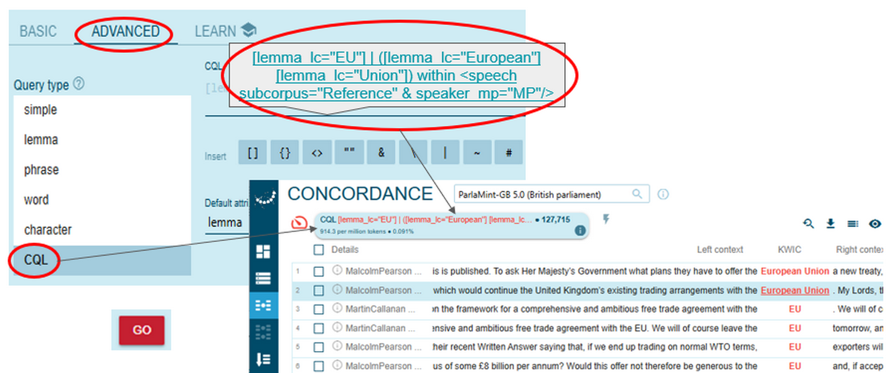 Figure 66. Running a complex concordance query.
In fact, you can also combine the CQL format for searches of lexical (and grammatical) structures with metadata limitations activated through the Text type selector (Figure 67). 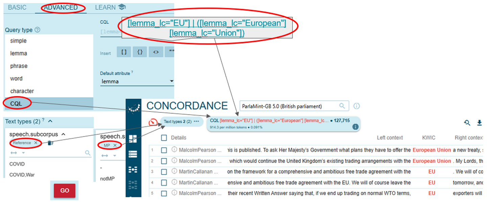 Figure 67. Combining the CQL format with metadata selections in search queries.
Either way, after clicking the Go button, you will arrive at the Concordance page, where you can view concordance lines from the parliamentary transcripts. Click the information icon to view numerical details of your query (Figure 68).
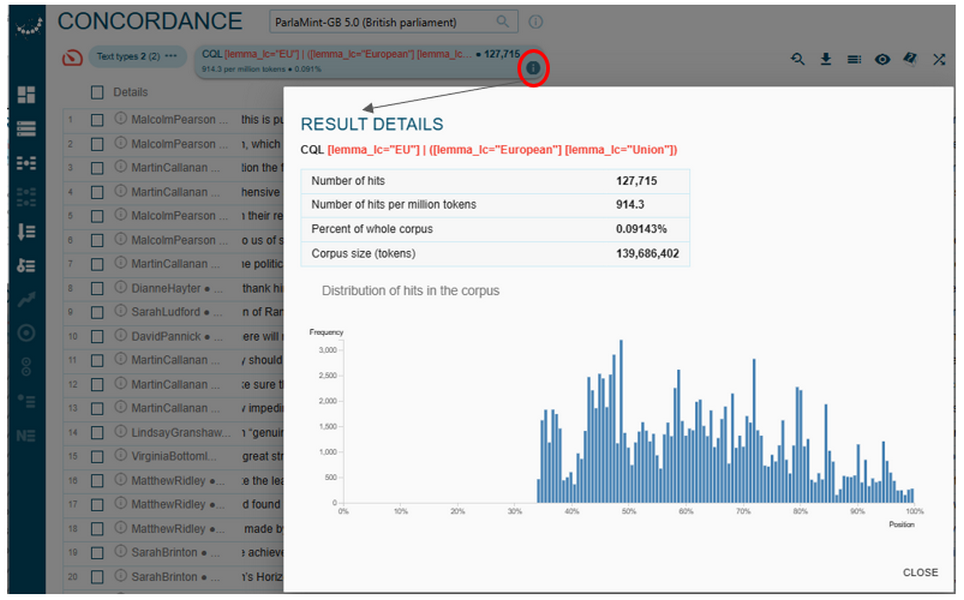 Figure 68. Concordance results with numerical details.
Step II: retrieving sentiment frequency and density
To access frequency results for the sentiment annotation of the retrieved concordance lines, click the Frequency button on the Concordance page, select the Text types preset and scroll down to the sentiment metadata (Figure 69). 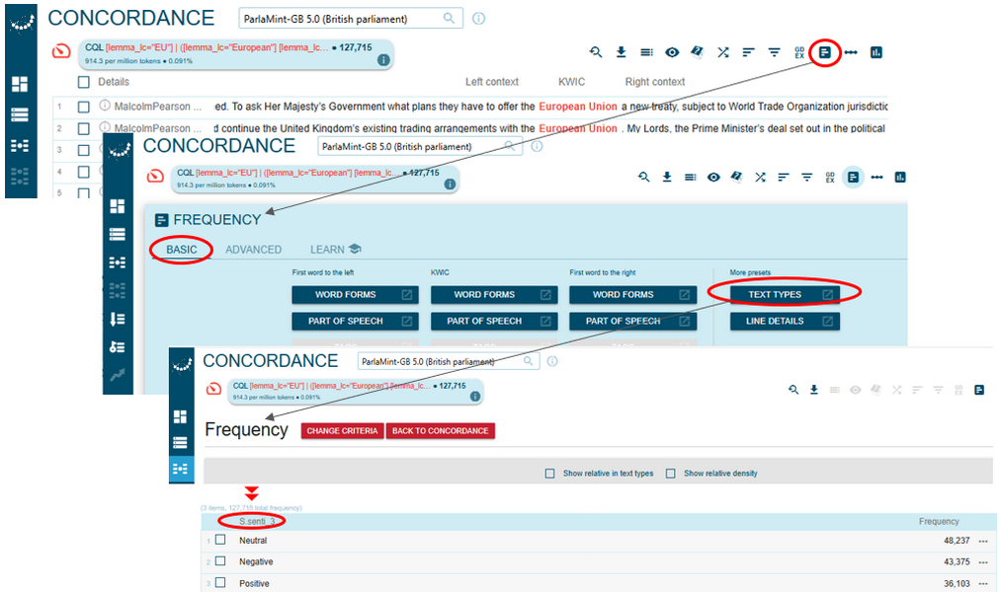 Figure 69. An easy path to frequency results for the sentiment annotation of the retrieved concordance lines via the Basic tab.
Alternatively, you can click the Frequency button on the Concordance page, select the Advanced tab, define one or more sentiment attributes of interest in the dropdown list and click the Go button. For the purposes of this step, we will focus on the senti_3 scale (Figure 70) but the senti_6 or the senti_n data can be selected alternatively or added to the search via the white and blue Plus icon in the Advanced version of the Frequency page. 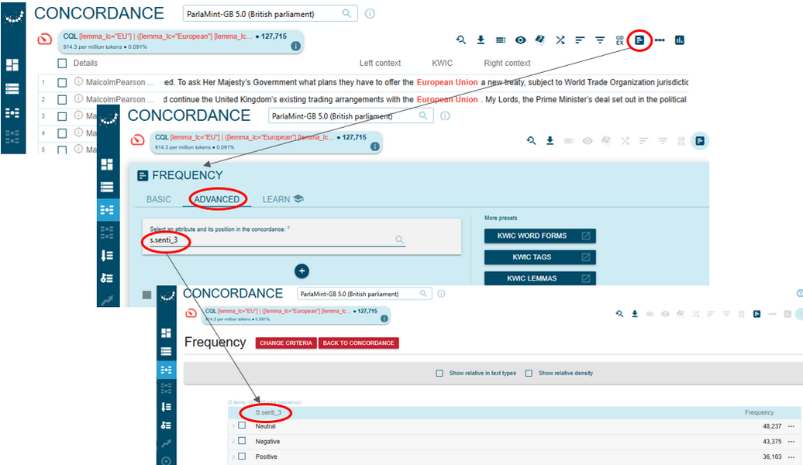 Figure 70. An advanced path to frequency results for the sentiment annotation of the retrieved concordance lines.
On the Frequency page, the default frequency of tokens is raw, or absolute, frequency but you can also choose to see relative frequency in text types and relative density (Figure 71). Relative frequency is explained above in the textbook. Relative density is provided in the NoSketch Engine concordancer as an indicator of a value being either more frequent or less frequent in the text type compared to the whole corpus. In other words, values below 100% indicate underuse, and above 100% indicate overuse relative to the baseline.
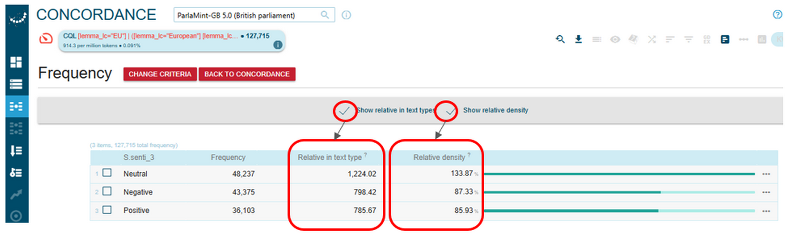 Figure 71. Default and selected frequency information.
1Figure 71 shows the absolute frequency, the relative frequency within the text type and the relative density of uses of the abbreviation EU and the phrase European Union by MPs in sentences annotated as neutral, negative, or positive in the Reference subcorpus of ParlaMint-GB. Mentions of the European Union/EU in neutrally annotated sentences appear to be more frequent and more characteristic than those in sentences annotated as negative or positive.
Adjust Step 1 and Step 2 to extract frequency information regarding explicit references to the European Union by MPs after Brexit (in the combined COVID and COVID, War subcorpora) and save these results for subsequent comparison.
Adjust Step 1 and Step 2 to extract frequency information regarding explicit mentions of Europe by MPs before and after Brexit (in the combined COVID and COVID, War subcorpora) and save these results for subsequent comparison.
Interpreting the results
Compare the retrieved relative frequency of references to the European Union/EU in the Reference subcorpus with those retrieved from the COVID and COVID, War subcorpora. Consider whether the pattern of predominantly mentioning the European Union in neutrally marked sentences changes after Brexit.
1For ease of comparison and interpretation, it is advisable to visualise the results using simple bar charts, as in Figure 72 and Figure 73, or line graphs.
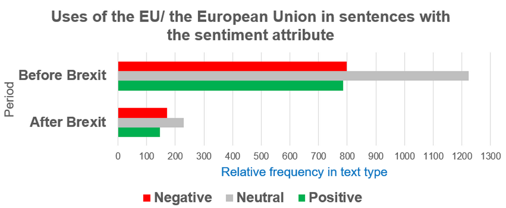 Figure 72. Relative frequency of uses of the EU and the European Union before and after Brexit in ParlaMint-GB.
Compare the retrieved relative frequencies on mentions of Europe (Figure 73) with those of the European Union (Figure 72) across the two periods. Does the tendency for mentions of the European Union to occur in neutrally annotated sentences (Figure 72) also apply to mentions of Europe (Figure 73)? Do you observe any other similarities or discrepancies in the relative frequency patterns under analysis before and after Brexit? 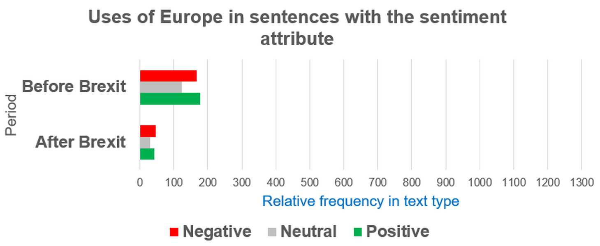 Figure 73. Relative frequency of uses of Europe before and after Brexit in ParlaMint-GB.
1➽ noSketch Engine tip: because relative frequency and relative density represent different aspects of distribution, they should not be combined or interpreted as if they were directly comparable. As a reminder, relative frequency expresses how often an item occurs in relation to the size of a given text type or subcorpus, whereas relative density shows how frequent a word or phrase is in a particular text type compared with its frequency in the whole corpus, taking into account the size of that text type. It therefore indicates how typical or characteristic the item is of that text type. Since these measures capture distinct dimensions of usage, students must keep them analytically separate and avoid drawing conclusions by comparing one measure from one subcorpus with the other measure from another.
Compare the retrieved relative density of mentions of the European Union (Figure 74) across the two periods. Remember that sentiment is annotated at the sentence level, and a sentence labelled as “Negative”, “Neutral”, or “Positive” does not necessarily express a negative, neutral, or positive stance toward the EU itself, although it is mentioned in those sentences. However, you can make some preliminary observations about more typical or less typical sentiment contexts for mentions of the European Union before and after Brexit. What is the most noticeable change in relative density after Brexit, in your view? 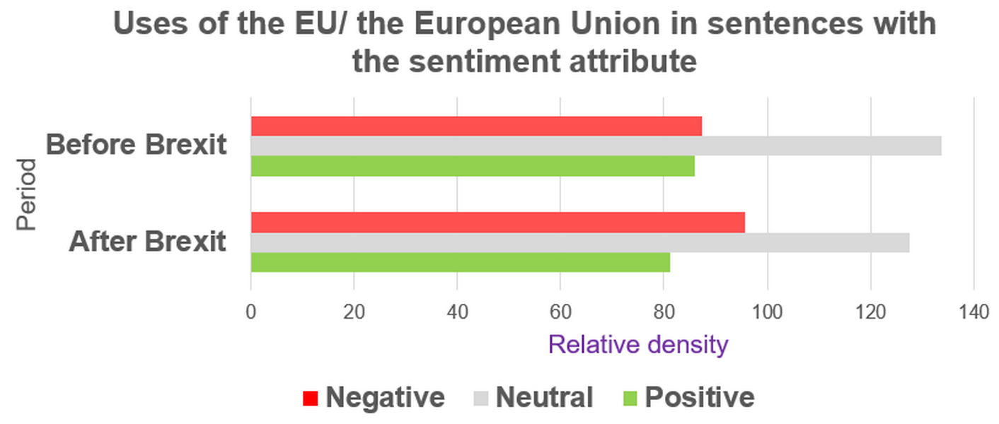 Figure 74. Relative density of uses of the EU and the European Union before and after Brexit in ParlaMint-GB.
Compare the retrieved relative density of mentions of the European Union (Figure 74) across the two periods with those of Europe (Figure 75).Which mentions – of the European Union or of Europe – show a stronger shift in sentences with the sentiment attribute after Brexit, and in which direction?
Figure 75. Relative density of uses of Europe before and after Brexit in ParlaMint-GB.
1In answering RQ2.1, the numerical data obtained thus far indicate that, after Brexit, references to the EU occur far less frequently in ParlaMint-GB. Although such references continue to appear characteristically in neutral contexts, there is a moderate shift towards their occurrence in sentences annotated as negative. As with the EU, mentions of Europe also decline sharply after Brexit across all sentiment categories, suggesting a general reduction in Europe‑related discourse in the UK Parliament. Unlike the EU, however, Europe tends to be used in more evaluative (non-neutral) contexts and displays a more pronounced shift towards negative density in the post‑Brexit period.
2That said, further interpretation and explanation of these results require the use of additional techniques of both distant and close reading, together with a critical evaluation of the broader sociopolitical context. For instance, negative sentences mentioning Europe may relate to the Covid‑19 pandemic or to Russia’s war of aggression against Ukraine, as illustrated in the examples below:
“My hon. Friend the Member for South Suffolk (James Cartlidge) referred to the disappointing news that Edinburgh is regarded as the covid capital of Europe. I will not be political on this one; I just think that it is a disappointment and that all colleagues across the House will hope that, with our heated debate and constructive criticism, we will get a better result quickly.” (ParlaMint-GB, Gagan Mohindra, 2021-07-07)
“There is a war in Europenow. Russia has invaded Ukraine. It is the most ghastly act—a number of speakers have said how unacceptable it is—but it is a war.” (ParlaMint-GB, Alan William John West, 2022-02-25)
3To develop a robust interpretation, you should therefore consider how different contexts shape the sentiment of the sentence as a whole, rather than assuming that a negative sentence necessarily reflects a negative attitude towards Europe (or any other concept of interest). You are encouraged to reflect on how you might incorporate these contextual factors into your own analysis and to think critically about what additional evidence would be needed before drawing firm conclusions.
Step III: calculating ratio of relative frequencies as an indicator of political polarisation in the UK parliament
1In Steps III-V, we focus on seeking answers to RQ2.2: Do polarity-bearing attitudes by MPs mentioning the European Union in the UK Parliament split along party lines and, if so, did Brexit influence this division?
2First, we need to operationalise it for our further exploration of ParlaMint-GB via the NoSketch Engine concordancer. The operationalisations below represent one possible way of approaching RQ2.2; however, they do not exhaust all potential analytical pathways. Other approaches are certainly possible, but for the purposes of Steps III-V we will concentrate on the following two options, which do not include the lemma Europe:
Does the ratio of relative token frequencies of the lemma EU and the sequence European Union in negatively annotated sentences spoken by MPs affiliated with various parliamentary parties differ between the Reference subcorpus and the combined COVID and COVID, War subcorpora?
Does the ratio of relative token frequencies of the lemma EU and the sequence European Union in positively annotated sentences spoken by MPs affiliated with various parliamentary parties differ between the Reference subcorpus and the COVID and COVID, War subcorpora?
4Review Steps I and II, then compose the appropriate queries to extract the required relative token frequencies. Revisit Showcase I for an illustration of how the ratio of relative token frequencies is calculated and interpreted. Try to complete these searches independently; if you encounter difficulties, consult the guidelines provided below.
Write the following complex query in the CQL search line on the Concordance page::
[lemma_lc="EU"] | ([lemma_lc="European"] [lemma_lc="Union"]) within <s senti_3="Negative"/> within <speech subcorpus="Reference" & speaker_mp="MP"/> and click the Go button.
Once the concordance has been generated, navigate to the Speech.speaker_party_name section on the Frequency page (Figure 76), using either the Basic or the Advanced tab. Note that the parliamentary parties are already ranked by their absolute frequencies. Select the top five parties (Conservative, Labour, Liberal Democrat, Scottish National Party, Crossbench) and save the relative frequencies of references to the EU/European Union in negatively annotated sentences in the Reference subcorpus. These data will be needed for subsequent comparisons. 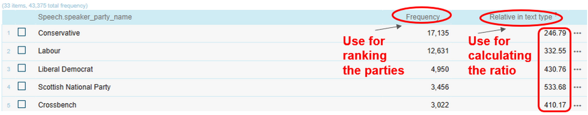 Figure 76. Frequency information on the use of the EU / European Union in negatively attributed sentences in the Reference subcorpus across parliamentary parties in the Speech.speaker_party_name section on the Frequency page.
Repeat the same procedures for the other three queries:
[lemma_lc="EU"] | ([lemma_lc="European"] [lemma_lc="Union"]) within <s senti_3="Positive"/> within <speech subcorpus="Reference" & speaker_mp="MP"/>
[lemma_lc="EU"] | ([lemma_lc="European"] [lemma_lc="Union"]) within <s senti_3="Negative"/> within <speech subcorpus="COVID|COVID,War" & speaker_mp="MP"/>
[lemma_lc="EU"] | ([lemma_lc="European"] [lemma_lc="Union"]) within <s senti_3="Positive"/> within <speech subcorpus="COVID|COVID,War" & speaker_mp="MP"/>
Once you have extracted the relative frequencies of EU‑related mentions in positively and negatively annotated sentences for the selected parliamentary parties in both the Reference and the combined COVID and COVID, War subcorpora, calculate the ratio of these relative frequencies and report the results in a table.
After completing the table, examine the patterns that emerge across parties and across time. Consider how these ratios might reflect broader political dynamics and discuss what additional contextual information would be required before drawing firm conclusions about party‑political attitudes towards the European Union.
Interpreting the results
1For reference, Table 9 shows that, across both periods, members of the Scottish National Party, Labour, the Liberal Democrats, and the Crossbench group consistently used EU-related references more frequently in negative than in positive contexts, with these ratios increasing after Brexit. By contrast, Conservative members maintained a ratio slightly below 1 in both periods, indicating a tilt towards positive sentences and a generally more balanced distribution of positive and negative sentences containing EU references compared with their counterparts.
Table 9. Relative frequencies of EU-related mentions in positively and negatively annotated sentences by representatives of the selected UK parliamentary parties before and after Brexit.
2That said, it remains uncertain whether the expressed sentiment is directed at the EU itself or, for example, at the UK’s withdrawal from it. This is because sentiment annotations applied at the level of the whole sentence do not necessarily capture the speaker’s attitude towards specific concepts mentioned within that sentence (see the Caution note above).
Step IV: reading raw sentiment scores and concordance lines
1Given that sentiment annotations do not reliably indicate the speaker’s attitude towards the EU itself, a close reading of selected concordance lines becomes essential. This procedure enables researchers to examine the linguistic context surrounding EU-related mentions and to determine whether the polarity reflects approval, criticism, or something else entirely. It also helps distinguish between attitudes directed at the EU as an institution and those directed at specific events, such as Brexit. Without this qualitative step, quantitative sentiment ratios risk oversimplifying or misrepresenting the speakers’ actual positions.
To illustrate the point, we randomly select concordance lines from negatively annotated sentences in the post-Brexit period, spoken by MPs from the parties with the highest and lowest ratios in Table 9 above, i.e. the Scottish National Party and the Conservative Party. Using the senti_n scale, which provides raw sentiment values, including scores below 0 and above 5 (see Sentiment information), we examine lines with sentiment scores below zero (see Figure 77). We hypothesise that these instances are more emphatically negative than sentences annotated within the 0–5 range and therefore offer a promising starting point for the close-reading procedure.
To retrieve negative sentences by SNP and Conservative Party members that mention the European Union, compose the appropriate query and enter it into the search line. For your reference, you may consult the following CQL query:
[lemma_lc="EU"] | ([lemma_lc="European"] [lemma_lc="Union"]) within <s senti_3="Negative"/> within <speech subcorpus="COVID|COVID,War" & speaker_mp="MP" & speaker_party="CON|SNP"/>
After running the query, go to the Frequency page and open the concordance lines of interest. You can do this either by clicking the three dots and selecting Only this option in the drop-down box to open the concordance lines on the same page, or by using the pop-out icon to open them in a new page (Figure 77). Alternatively, you can tick the relevant item and click Selected or use the corresponding pop-out icon (Figure 78). 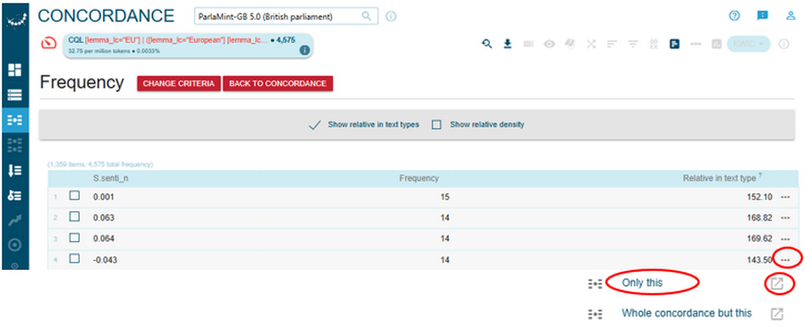 Figure 77. Opening concordance lines.
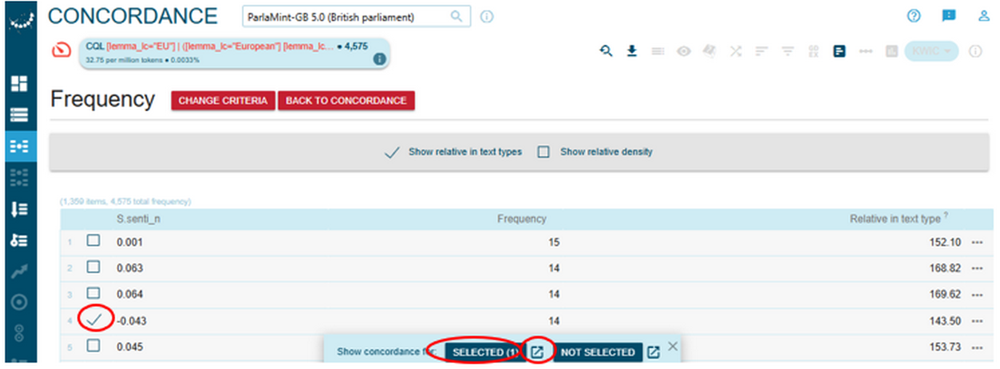 Figure 78. An alternative way of opening concordance lines.
The concordance lines can then be grouped according to whether they were produced by SNP or Conservative members using the Frequency page (Figure 79) or alternatively filtered by party name via the Filter page (Figure 80).
Figure 79. Grouping the selected concordance lines via the Frequency page.
Figure 80. Filtering the selected concordance lines by party name via the Filter page.
2To demonstrate the benefit of integrating quantitative sentiment analysis with a close examination of concordance lines, we analyse instances of the terms EU and European Union in sentences produced by SNP and Conservatives that share an identical raw sentiment score of –0.043.
Interpreting the results
1A close reading of concordance lines in Figure 81 reveals that SNP members portray the EU as a positive force, emphasising its protective role in areas such as cultural exchange, food standards, and regional identity. Their utterances convey a sense of grievance and loss, with phrases like “dragged out… against our will” and “a kick in the teeth” signalling frustration at the perceived consequences of Brexit for Scotland. In these examples, the EU is framed as a guarantor of rights and quality, and its absence is associated with tangible harm to Scottish interests.
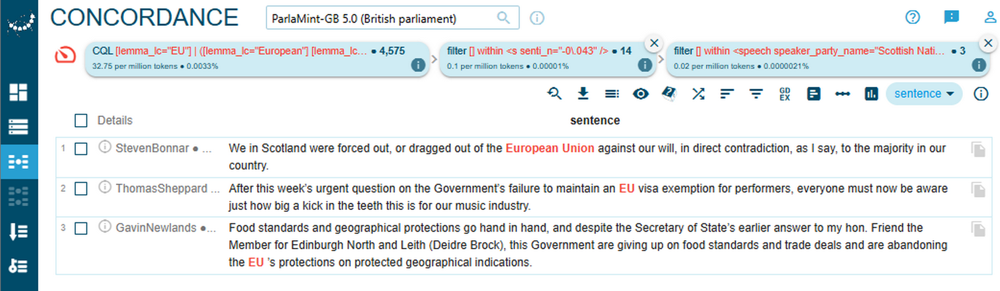 Figure 81. Concordance lines with the -0.043 sentiment value uttered by SNP members.
2In contrast, Conservative MPs (Figure 82) adopt a more critical and confrontational tone towards the EU. Their references include accusations of inflexibility, manipulation of trade protocols, and economic inefficiency. The EU is portrayed as obstructive or adversarial, with the wording such as “conning,” “imposing a border,” and “threat to disrupt exports”, and its representatives as irritable and overreacting, “as if they had been stung by wasps”. Although some lines acknowledge the need for continued negotiation, the overall sentiment leans towards scepticism and strategic distancing. Conservative speakers also take the opportunity to criticise the Scottish Government for “waiting and following the European Union.”
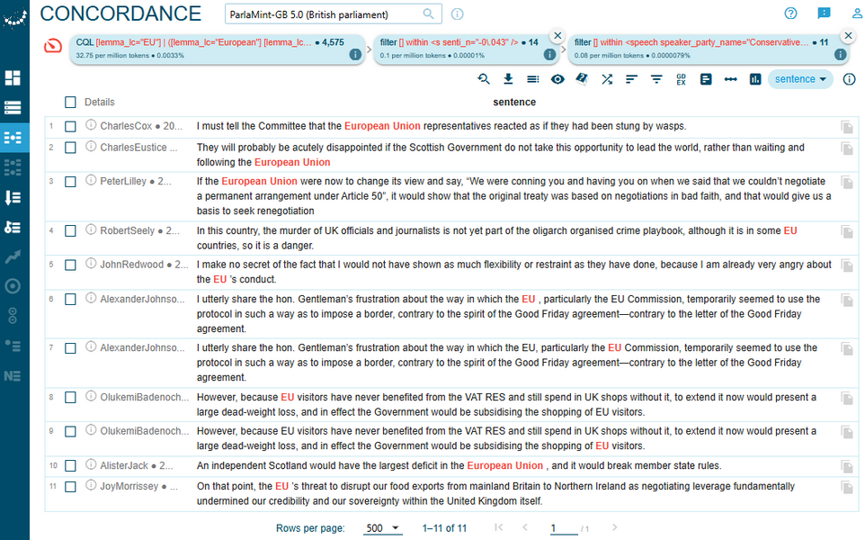 Figure 82. Concordance lines with the -0.043 sentiment value uttered by Conservative Party members.
3This contrast underscores a fundamental divergence in how the two parties frame the EU: SNP members tend to lament its loss and foreground its perceived benefits, whereas Conservative members are more likely to question the EU’s intentions and emphasise themes of sovereignty and control.
4A close reading of the concordance lines makes clear that quantitative sentiment data, taken in isolation, may be misleading and cannot capture nuanced rhetorical strategies or the different evaluative stances embedded in each party’s discourse.
Step V: extracting collocates
1While close reading helps uncover the contours of meaning and speaker intent, collocationanalysis can map the broader terrain by identifying statistically significant word pairings that signal prevailing evaluative patterns across large corpora, thereby offering a valuable analytical lens for examining wider discourse tendencies.
To compare collocates of the EU/European Union used in negatively annotated sentences by SNP and Conservative Party in the post-Brexit period, use a respective complex query for each party separately.
Compose and run a CQL query for SNP:
[lemma_lc="EU"] | ([lemma_lc="European"] [lemma_lc="Union"]) within <s senti_3="Negative"/> within <speech subcorpus="COVID|COVID,War" & speaker_mp="MP" & speaker_party="SNP"/>
Click the Collocations icon on the Concordance page, set the collocation parameters and push the Go button (Figure 83). The collocation parameters specified here ensure that the retrieved collocates of the EU/European Union are lowercase lemmas occurring within a span of 5 tokens to the left and 5 tokens to the right from the search terms. Candidate collocates should appear at least 5 times in the whole corpus and at least 3 times within the given range. Collocates are computed and ranked using the Log Dice statistical measure. Each of these collocation parameters may be adjusted to suit the requirements of your own research design. 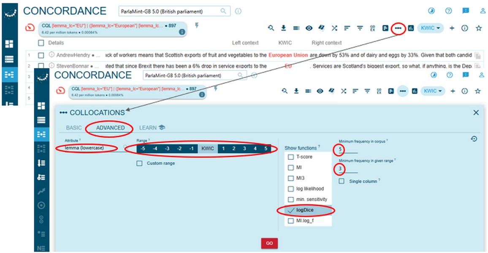 Figure 83. Adjusting parameters for collocation analysis.
You can download and save the results locally (Figure 84). Also, it is recommended to keep the browser tab with these results open or to save the URL for easy return, as we will revisit these collocates shortly to explore the data further. 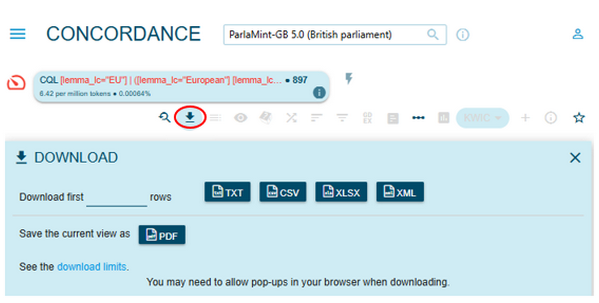 Figure 84. Options for downloading the retrieved collocate list.
Repeat procedures 1-4, subsequently querying negatively annotated sentences used by Conservative Party and positively annotated sentences used by SNP and Conservative Party, all in the post-Brexit period:
[lemma_lc="EU"] | ([lemma_lc="European"] [lemma_lc="Union"]) within <s senti_3="Negative"/> within <speech subcorpus="COVID|COVID,War" & speaker_mp="MP" & speaker_party="CON"/>
[lemma_lc="EU"] | ([lemma_lc="European"] [lemma_lc="Union"]) within <s senti_3="Positive"/> within <speech subcorpus="COVID|COVID,War" & speaker_mp="MP" & speaker_party="SNP"/>
[lemma_lc="EU"] | ([lemma_lc="European"] [lemma_lc="Union"]) within <s senti_3="Positive"/> within <speech subcorpus="COVID|COVID,War" & speaker_mp="MP" & speaker_party="CON"/>
Compare the Log Dice values across the retrieved collocate lists and select collocates for further examination.
Closely read contexts of the selected collocates in which they are used by clicking on the three dots and opening respective concordance lines.
Interpreting the results
1For illustrative purposes, we focus here on the top 10 collocates in each of the retrieved lists and select collocates with the Log Dice value above 7 for closer analysis (Figure 85 and Figure 86), as such collocates are regarded to have strong associations with the search terms (Jaworska and Kinloch, 2018: 122).
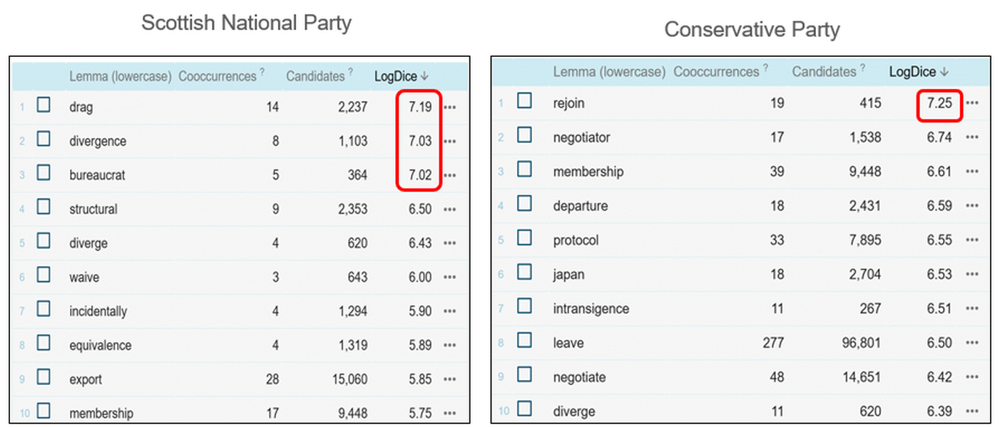 Figure 85. Collocates of the EU/European Union in negatively annotated sentences uttered by SNP and Conservative Party members in the post-Brexit period.
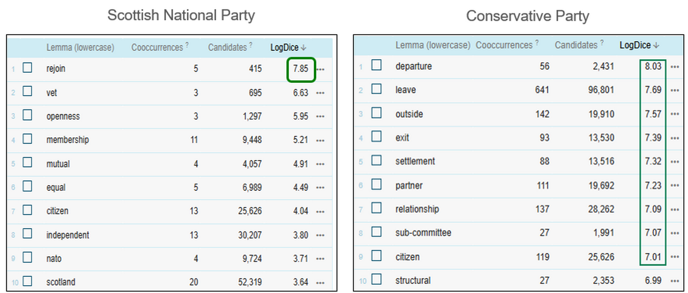 Figure 86. Collocates of the EU/European Union in positively annotated sentences uttered by SNP and Conservative Party members in the post-Brexit period.
2Probably, the most obvious observation, when comparing the collocate lists in Figure 85 and Figure 86 above, is the polar difference in sentiment related to the lemma rejoin. It emerges as the strongest collocate of the EU/European Union in positively annotated sentences uttered by SNP members and in negatively annotated sentences uttered by Conservative Party members in the post-Brexit period.
3A close reading of concordance lines helps clarify this difference in sentiment. While SNP members discuss rejoining the EU as a desired scenario for Scotland (Figure 87), Conservative MPs criticise predominantly the SNP, but also members of some other parliamentary parties, for expressing a desire to rejoin the EU (Figure 88).
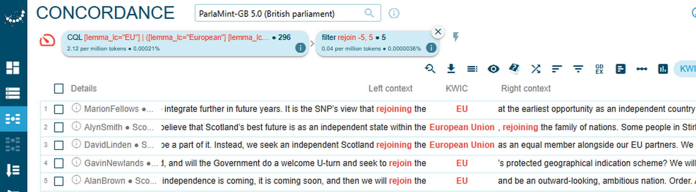 Figure 87. Concordance lines containing co-occurrences of rejoin and the EU/European Union in positively annotated sentences uttered by SNP members.
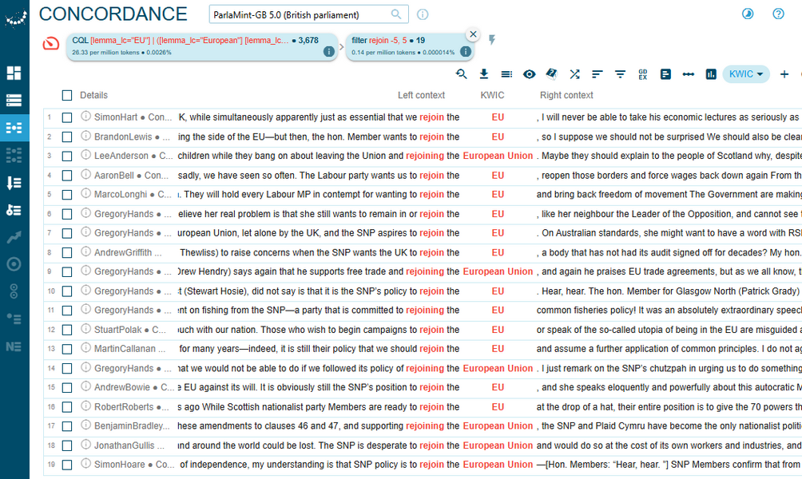 Figure 88. Concordance lines containing co-occurrences of rejoin and the EU/European Union in negatively annotated sentences uttered by Conservative Party members.
4A close reading of concordance lines containing the lemma drag, which is the strongest collocate of the EU/European Union in negatively annotated sentences uttered by SNP members in the post-Brexit period, reveals a recurring narrative of involuntary separation (Figure 89). The patterns “dragged out of” in the left-hand contexts and “against … will / wishes” in the right-hand contexts appear repeatedly, emphasising Scotland’s lack of agency and the perceived violation of its electoral mandate. This framing casts Brexit not as a collective national decision but as an imposed rupture, often linked to economic harm, political betrayal, and cultural loss. The collocate drag thus functions as a rhetorical anchor for grievance, reinforcing the SNP’s broader argument for autonomy and re-engagement with the EU.
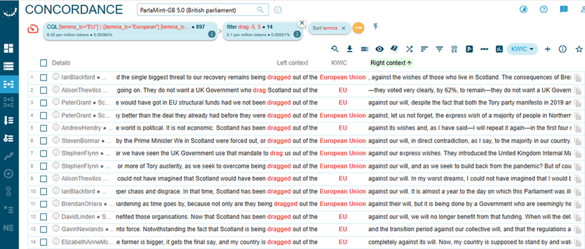 Figure 89. Concordance lines containing the lemma drag co-occurring with the EU/European Union in negatively annotated sentences uttered by SNP members in the post-Brexit period.
5This reading is also corroborated by examining sentiment information of all the concordance lines from Figure 89 above according to the 6-level scale (s.senti_6). As seen in Figure 90 below, 13 out of 14 instances containing the lemma drag are annotated as negative and only one as mixed negative.
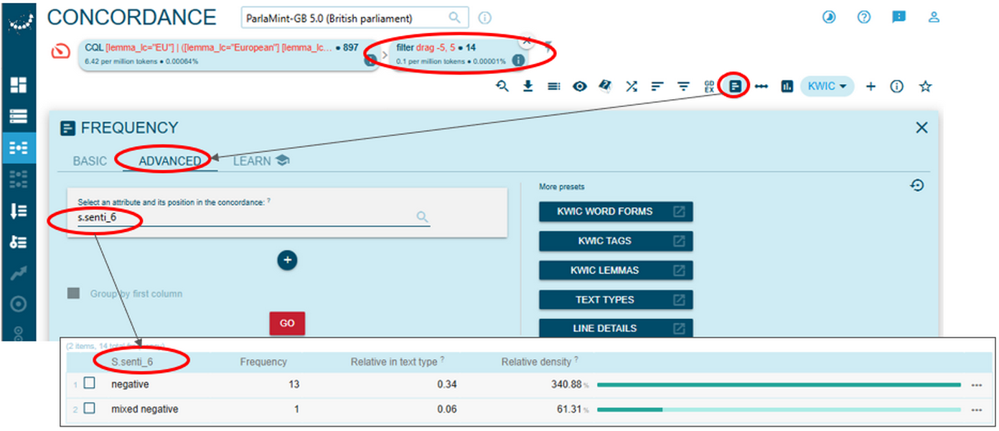 Figure 90. Sentiment information regarding the selected sentences containing the lemma drag according to the 6-level scale (s.senti_6).
6On the other hand, the four strongest collocates of the EU/European Union in positively annotated sentences uttered by Conservative Party members in the post-Brexit period are departure, leave, outside, exit. Their prominence indicates that references to the European Union by Conservative Party members remain strongly framed through the lens of withdrawal. However, unlike in the case of drag used by SNP members, sentiment of the sentences containing the lemmas departure, leave, outside, exit co-occurring with EU/European Union in positively annotated sentences uttered by Conservative Party members in the post-Brexit period is relatively evenly distributed between positive and mixed positive according to the 6-level scale (Figure 91).
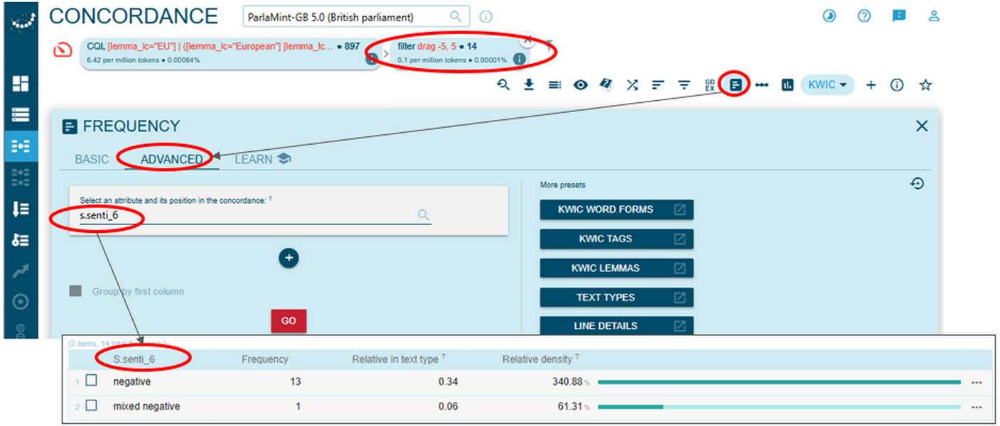 Figure 91. Sentiment information regarding the selected sentences containing departure, leave, outside, exit, the collocates of the EU/European Union, uttered by Conservative Party members in the post-Brexit period according to the 6-level schema (s.senti_6).
Step VI: comparing keywords to capture sentiment differences
1To capture more nuanced differences between positive and mixed positive sentences containing the lemmas departure, leave, outside, exit that collocate with the EU/European Union used by Conservative Party members in the post-Brexit period, we can resort to keyword analysis. Our actions are as follows:
Create a subcorpus from the positive sentences displayed in Figure 91 above by opening the respective concordance lines in a new window, clicking the Plus icon, naming your subcorpus and saving it, as shown in Figure 92 below (see also concordance-based subcorpus creation).
Figure 92. Creating a subcorpus from selected positively annotated sentences via the Concordance page for keyword analysis.
Repeat the procedures above to create a subcorpus from the selected mixed positive sentences.
Navigate to the Keywords page by clicking the respective icon on the vertical toolbar, select one of the newly created subcorpora as your focus subcorpus, ParlaMint-GB 5.0 as your reference corpus and the other newly created subcorpus as your reference subcorpus, as shown in Figure 93. Identify keywords as lowercase lemmas and click the Go button.
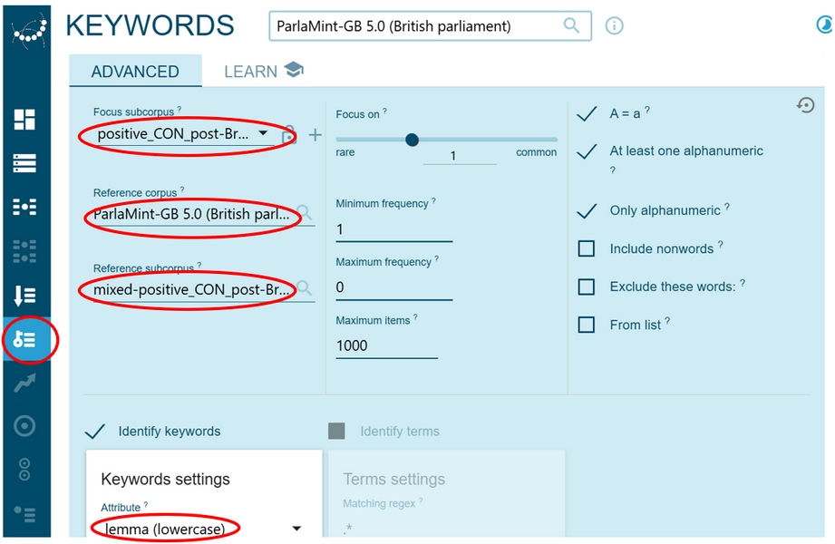 Figure 93. Identifying keywords in the focus subcorpus as compared with the reference subcorpus of the reference corpus.
Save the results.
Switch between the focus and the reference subcorpora by clicking the icon with rightwards arrow over leftwards arrow in the top left corner.
Save the results.
Compare the top 20 keywords from the positive_… subcorpus with the top 20 keywords from the mixed-positive_… subcorpus.
Interpreting the results
1In Step VI, we obtain two keyword lists to better understand the range of positive sentiment in sentences containing the terms EU/European Union and their four strongest collocates departure, leave, outside, exit, which were uttered by Conservative MPs in the post-Brexit period. The list on the left contains keywords that are more typical of the positive_CON_post-Brexit_collocates-departure-left-outside-exit subcorpus and the list on the right contains keywords that are more typical of the mixed-positive_CON_post-Brexit_collocates-departure-left-outside-exit subcorpus (Figure 94).
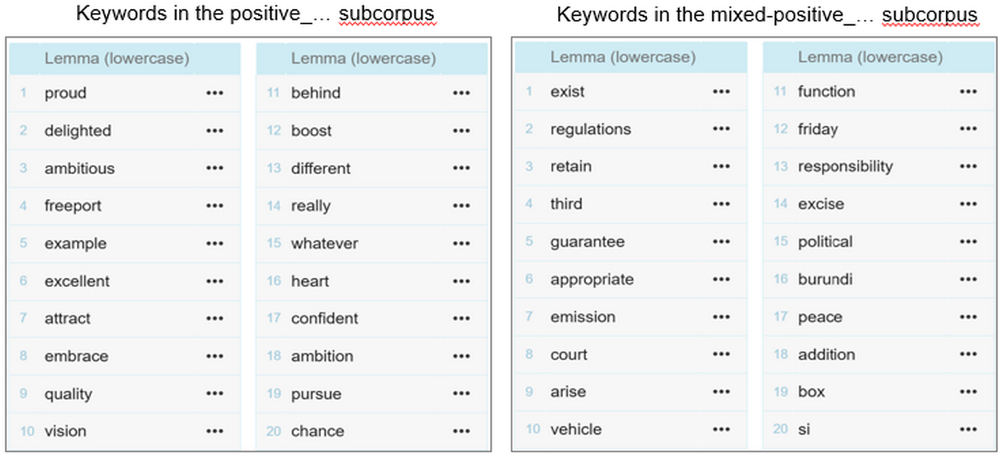 Figure 94. Top 20 keywords representing the subcorpus from positive sentences (on the left) and positive mixed sentences (on the right) containing the term EU/European Union and at least one of their four strongest collocates departure, leave, outside, exit, which were uttered by Conservative MPs in the post-Brexit period.
2A close examination of the keyword list representing the positive_… subcorpus, coupled with an inspection of selected concordance lines, suggests that it includes words encoding positive emotional stance (proud, delighted, confident), positive evaluation (excellent, quality), intensifiers (really), lexis associated with goals, progress, or future‑oriented positivity (ambitious, ambition, vision, pursue, chance), expressions of centrality (at the heart of), as well as items indicating economic development (freeports), improvement, strengthening, or proactive engagement (boost, engage, attract).
3By contrast, the keyword list representing the mixed-positive_… subcorpus is dominated by items related to governance, law, regulation, and institutional processes (regulations, court, responsibility, appropriate, guarantee, function, political, SI, i.e. Statutory Instrument), along with lexis referring to specific policy areas (emission, vehicle, excise) as well as other common words and proper nouns that are predominantly neutral.
4Taken together, the two keyword lists reveal a palpable distinction in how positive sentiment is constructed across the two subcorpora. The positive_… subcorpus relies heavily on explicitly affective and evaluative lexis, including emotional adjectives and aspirational vocabulary, alongside policy‑linked terms framed as opportunities. By contrast, the mixed‑positive_… subcorpus is dominated by governance‑, regulation‑, and institution‑related terminology, supplemented by technical policy‑domain items and largely neutral procedural vocabulary. This suggests that positive sentiment in the positive_… subcorpus is conveyed primarily through overtly positive lexical choices, whereas in the mixed‑positive_… subcorpus it emerges more subtly from contextual framing within otherwise neutral or administrative language.
5To finalise answering RQ2.2, complete the following tasks.
Repeat Step V to extract collocates of EU/European Union in positively and negatively annotated sentences by SNP and Conservative Party members uttered before Brexit.
Repeat Step VI for selected collocates before Brexit.
Compare your results with the results discussed in Step V and Step VI. What similarities or discrepancies do you observe across both periods?
Additionally, you can obtain, analyse and compare sentiment data for other parties represented in the UK Parliament (for instance, the Labour Party), or select any other parliament corpus (corpora) from the rich ParlaMint family and develop your own research questions.
6To conclude, this showcase has examined the challenges and opportunities of applying sentence-level sentiment annotations to word-level expressions in parliamentary discourse. By tracing sentiment variation over time and across party lines in debates concerning the European Union, we have highlighted the importance of aligning linguistic granularity with analytical aims. While quantitative data and corpus techniques such as collocation analysis, keyword analysis and concordance reading offer valuable insights into political polarisation, they must be contextualised within broader rhetorical and ideological frameworks to avoid misinterpretation. As with all corpus-assisted research, methodological rigour and political awareness are essential to ensure that sentiment analysis contributes meaningfully to our understanding of parliamentary language and its evolving dynamics.
25.The use of a binary gender distinction in this digital textbook reflects the information provided in the official records incorporated into the ParlaMint corpora.
27.To calculate the ratio of relative token frequencies between female and male speakers, divide one relative frequency by the other. For instance, the female-to-male ratio on Social Welfare is 63,503.33 : 26,105.26 ≈ 2.43, which means that Social Welfare is discussed 2.43 times more frequently by female speakers than by male speakers, relative to their respective subcorpus sizes (see Table 3). If you need to calculate the inverse (male-to-female ratio) on Social Welfare, it is 26,105.26 : 63,503.33 ≈ 0.41.
29.Do not forget that TEITOK only includes original data, i.e., no machine-translated version, so it is best to first display the original sentence in noSketch Engine, and then use metadata from there, to search for the debate in TEITOK, in particular if you use tokens as search parameter.
30.If you wish, you can develop your own schema for this particular analysis.